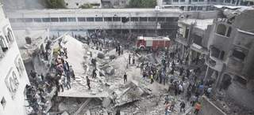

2012-11-19T20:52:02Z
Rousseff llama a las inversiones españolas "sin resentimientos"
Rousseff llama a las inversiones españolas "sin resentimientos"
AGENCIAS
La presidenta de Brasil ha estado de visita en España.
Se ha reunido con Mariano Rajoy en La Moncloa este lunes.
"Hay que construir una alianza efectiva", ha dicho la presidenta.
La presidenta de Brasil, Dilma Rousseff, ha presentado este lunes a su país como un destino atractivo para las inversiones españolas y que "no busca enemigos ni resentimientos". Rouseff dijo que en el pasado Brasil fue víctima de la "superioridad pretenciosa" de algunos -que no citó- cuando era un "eterno deudor", pero ahora es un país con total seguridad jurídica y que incluso presta al FMI.En una conferencia ante líderes políticos y empresariales celebrada en el Teatro Real dentro de su primera visita oficial a Madrid, Rousseff ha subrayado la necesidad de aumentar los intercambios comerciales entre ambos países, que hoy suman 8.000 millones de dólares, una cifra "importante" -dijo- pero "lejos del potencial existente".La presidenta ha resaltado que tanto el jefe del Ejecutivo español, Mariano Rajoy, como el rey Juan Carlos le han expresado su disposición a "profundizar en el diálogo y construir una alianza efectiva" entre España y Brasil. Como ejemplo de las bonanzas de la economía brasileña, recordó que en la última década ha creado 17 millones de empleos, que 40 millones de personas han pasado de la pobreza a la clase media y que el sector financiero es "robusto". Con la celebración en el horizonte del Mundial de Fútbol de 2014 y los Juegos Olímpicos de 2016, Rousseff puso especial énfasis en la necesidad de solucionar "los cuellos de botella" en materia de infraestructuras y recordó que están en marcha importantes licitaciones de transporte y energía. Bernardo Figuereido, presidente de la Empresa de Planeamiento y Logística, destacó que su gobierno ha puesto en marcha un plan de concesiones al sector privado para infraestructuras por 133.000 millones de reales (65.500 millones de dólares) que contempla la construcción y ampliación de cerca de 7.500 kilómetros de carreteras y de 10.000 kilómetros de vías férreas.Mauricio Tolmasquim, presidente de la estatal Empresa de Estudios Energéticos resaltó el "potencial enorme" en este sector, especialmente en el ámbito hidroeléctrico, que hoy supone el 78,7 % de la potencia instalada. También subrayó la apuesta de Brasil por las eólicas, que generarán este año el 1,1 % de la energía producida y está previsto que la cuota aumente al 5,6 % en cuatro años, sin renunciar al petróleo, ya que aspiran a producir 5,4 millones de barriles diarios en diez años y exportar casi la mitad.José Ignacio Sánchez Galán, presidente de Iberdrola, consideró que el modelo energético brasileño es "predecible y estable", y valoró que esté basado en "explotar primero las fuentes más competitivas", en este caso las hidroeléctricas. Sánchez Galán recordó que Brasil seguirá siendo en los próximos años el segundo destino de sus inversiones extranjeras, después de Reino Unido, y en concreto prevén inversiones de unos 10.000 millones de reales.Santiago Fernández Valbuena, presidente de Telefónica Latinoamérica, aseguró que el traslado de su sede operativa a Sao Paolo es una demostración de la apuesta de su empresa por este país. Para Telefónica "América se ha convertido en la región que más rápido crece y Brasil es el líder de la región", dijo, al tiempo que detalló que su principal reto de futuro en este país es la banda ancha. Las previsiones del FMI y de analistas brasileños coinciden en apuntar una previsión de crecimiento de la economía brasileña de en torno al 1,5 % para 2012 y el 4 % en 2013
AGENCIAS
- La presidenta de Brasil ha estado de visita en España.
- Se ha reunido con Mariano Rajoy en La Moncloa este lunes.
- "Hay que construir una alianza efectiva", ha dicho la presidenta.
La presidenta de Brasil, Dilma Rousseff, ha presentado este lunes a su país como un destino atractivo para las inversiones españolas y que "no busca enemigos ni resentimientos". Rouseff dijo que en el pasado Brasil fue víctima de la "superioridad pretenciosa" de algunos -que no citó- cuando era un "eterno deudor", pero ahora es un país con total seguridad jurídica y que incluso presta al FMI.
En una conferencia ante líderes políticos y empresariales celebrada en el Teatro Real dentro de su primera visita oficial a Madrid, Rousseff ha subrayado la necesidad de aumentar los intercambios comerciales entre ambos países, que hoy suman 8.000 millones de dólares, una cifra "importante" -dijo- pero "lejos del potencial existente".
La presidenta ha resaltado que tanto el jefe del Ejecutivo español, Mariano Rajoy, como el rey Juan Carlos le han expresado su disposición a "profundizar en el diálogo y construir una alianza efectiva" entre España y Brasil. Como ejemplo de las bonanzas de la economía brasileña, recordó que en la última década ha creado 17 millones de empleos, que 40 millones de personas han pasado de la pobreza a la clase media y que el sector financiero es "robusto".
Con la celebración en el horizonte del Mundial de Fútbol de 2014 y los Juegos Olímpicos de 2016, Rousseff puso especial énfasis en la necesidad de solucionar "los cuellos de botella" en materia de infraestructuras y recordó que están en marcha importantes licitaciones de transporte y energía. Bernardo Figuereido, presidente de la Empresa de Planeamiento y Logística, destacó que su gobierno ha puesto en marcha un plan de concesiones al sector privado para infraestructuras por 133.000 millones de reales (65.500 millones de dólares) que contempla la construcción y ampliación de cerca de 7.500 kilómetros de carreteras y de 10.000 kilómetros de vías férreas.
Mauricio Tolmasquim, presidente de la estatal Empresa de Estudios Energéticos resaltó el "potencial enorme" en este sector, especialmente en el ámbito hidroeléctrico, que hoy supone el 78,7 % de la potencia instalada. También subrayó la apuesta de Brasil por las eólicas, que generarán este año el 1,1 % de la energía producida y está previsto que la cuota aumente al 5,6 % en cuatro años, sin renunciar al petróleo, ya que aspiran a producir 5,4 millones de barriles diarios en diez años y exportar casi la mitad.
José Ignacio Sánchez Galán, presidente de Iberdrola, consideró que el modelo energético brasileño es "predecible y estable", y valoró que esté basado en "explotar primero las fuentes más competitivas", en este caso las hidroeléctricas. Sánchez Galán recordó que Brasil seguirá siendo en los próximos años el segundo destino de sus inversiones extranjeras, después de Reino Unido, y en concreto prevén inversiones de unos 10.000 millones de reales.
Santiago Fernández Valbuena, presidente de Telefónica Latinoamérica, aseguró que el traslado de su sede operativa a Sao Paolo es una demostración de la apuesta de su empresa por este país. Para Telefónica "América se ha convertido en la región que más rápido crece y Brasil es el líder de la región", dijo, al tiempo que detalló que su principal reto de futuro en este país es la banda ancha. Las previsiones del FMI y de analistas brasileños coinciden en apuntar una previsión de crecimiento de la economía brasileña de en torno al 1,5 % para 2012 y el 4 % en 2013
2012-11-19T18:53:25Z
La UE pide explorar un nuevo acuerdo bilateral con Cuba
La UE pide explorar un nuevo acuerdo bilateral con Cuba
EFE
Los ministros de Exteriores de la UE instaron a preparar un proyecto de mandato para negociar un acuerdo de cooperación con Cuba.
Según De Benito, la UE aprecia "una evolución positiva en Cuba".
La UE autorizó este lunes a explorar un acuerdo bilateral con La Habana que, a medio plazo, pueda permitir ir más allá de la "posición común" que rige las relaciones de la Unión Europea con la isla.Los ministros de Exteriores de la UE, reunidos en Bruselas, instaron a la jefa de la diplomacia comunitaria, Catherine Ashton, a preparar un proyecto de mandato para negociar un acuerdo de cooperación con Cuba, aunque por ahora se mantendrá la "posición común" de 1996, que condiciona el progreso de las relaciones a los avances en la democratización y los derechos humanos en la isla.Según el secretario de Estado español de Exteriores, Gonzalo de Benito, el punto fue objeto de "un acuerdo prácticamente unánime". "A partir de ahora lo que va a hacer la Comisión es establecer unas directrices (...) para que se negocie este acuerdo de cooperación, que representa un paso adelante en la relación entre la Unión Europea y Cuba", indicó De Benito a la prensa.El convenio, señaló, debe servir también para "ordenar" las relaciones de Europa con La Habana, dado que ya hay trece Estados miembros que tienen acuerdos con el Gobierno cubano.Según De Benito, la UE aprecia "una evolución positiva en Cuba", lo que, acompañado del proceso de revisión de las relaciones que Ashton ha liderado durante los últimos dos años, lleva a la conclusión de que se puede abrir una negociación."Es un paso positivo. La relación con Cuba se refuerza. Va a ser una ordenación de nuestra relación (...) con Cuba", subrayó el secretario de Estado español. Además, indicó que la "posición común se mantiene" y que este acuerdo tiene cabida en ese marco.De acuerdo con fuentes comunitarias, sería a medio plazo cuando la nueva relación podría sustituir a esa postura, que se aprobó en 1996 a iniciativa del Gobierno español conservador de José María Aznar.En los últimos años, las relaciones entre La Habana y Bruselas han pasado por altibajos, con un punto especialmente bajo a principios de la pasada década como consecuencia de la conocida como "Primavera Negra", cuando Cuba encarceló a 75 opositores.La Unión respondió con la imposición de sanciones diplomáticas, a lo que a su vez La Habana contestó rechazando la ayuda al desarrollo europea.
EFE
- Los ministros de Exteriores de la UE instaron a preparar un proyecto de mandato para negociar un acuerdo de cooperación con Cuba.
- Según De Benito, la UE aprecia "una evolución positiva en Cuba".

La UE autorizó este lunes a explorar un acuerdo bilateral con La Habana que, a medio plazo, pueda permitir ir más allá de la "posición común" que rige las relaciones de la Unión Europea con la isla.
Los ministros de Exteriores de la UE, reunidos en Bruselas, instaron a la jefa de la diplomacia comunitaria, Catherine Ashton, a preparar un proyecto de mandato para negociar un acuerdo de cooperación con Cuba, aunque por ahora se mantendrá la "posición común" de 1996, que condiciona el progreso de las relaciones a los avances en la democratización y los derechos humanos en la isla.
Según el secretario de Estado español de Exteriores, Gonzalo de Benito, el punto fue objeto de "un acuerdo prácticamente unánime". "A partir de ahora lo que va a hacer la Comisión es establecer unas directrices (...) para que se negocie este acuerdo de cooperación, que representa un paso adelante en la relación entre la Unión Europea y Cuba", indicó De Benito a la prensa.
El convenio, señaló, debe servir también para "ordenar" las relaciones de Europa con La Habana, dado que ya hay trece Estados miembros que tienen acuerdos con el Gobierno cubano.
Según De Benito, la UE aprecia "una evolución positiva en Cuba", lo que, acompañado del proceso de revisión de las relaciones que Ashton ha liderado durante los últimos dos años, lleva a la conclusión de que se puede abrir una negociación.
"Es un paso positivo. La relación con Cuba se refuerza. Va a ser una ordenación de nuestra relación (...) con Cuba", subrayó el secretario de Estado español. Además, indicó que la "posición común se mantiene" y que este acuerdo tiene cabida en ese marco.
De acuerdo con fuentes comunitarias, sería a medio plazo cuando la nueva relación podría sustituir a esa postura, que se aprobó en 1996 a iniciativa del Gobierno español conservador de José María Aznar.
En los últimos años, las relaciones entre La Habana y Bruselas han pasado por altibajos, con un punto especialmente bajo a principios de la pasada década como consecuencia de la conocida como "Primavera Negra", cuando Cuba encarceló a 75 opositores.
La Unión respondió con la imposición de sanciones diplomáticas, a lo que a su vez La Habana contestó rechazando la ayuda al desarrollo europea.
2012-11-19T16:03:22Z
Una fotografía de niños muertos en Gaza, ¿información o sensacionalismo?
Una fotografía de niños muertos en Gaza, ¿información o sensacionalismo?
Daniel Glez. 20m
Una foto de cuatro niños muertos en un ataque contra Gaza ha vuelto a reavivar el debate sobre lo que deben publicar o no deben publicar los medios.
Una periodista italiana ha denunciado el bloqueo de su cuenta de Facebook por publicar dicha fotografía en la red social.
ENCUESTA: ¿Es conveniente publicar estas fotos en noticias bélicas?
El conflicto entre Israel y Palestina está sufriendo un nuevo recrudecimiento. Los enfrentamientos ya están teniendo serias consecuencias en la población. De hecho, Israel ha admitido que un tercio de los 95 muertos que ya se ha cobrado su ofensiva sobre Gaza no estaban implicados en el conflicto. Las informaciones no paran de sucederse, y tampoco los documentos gráficos. Son estos los que plantean dudas a los medios de comunicación: fotografías duras, truculentas, con sangre y muchos muertos, instantáneas que muestran cadáveres de niños. ¿Procede publicar tales imágenes o hacerlo no es más que una forma de caer en el sensacionalismo?La mañana del lunes, la activista italiana y reportera gráfica Rosa Schiano denunciaba a través de Twitter que Facebook había eliminado una fotografía de cuatro niños muertos en Gaza y bloqueado su cuenta en dicha red social. Muchos de sus seguidores no han tardado en señalarlo como un acto de censura. Lo cierto es que no es la primera vez que Facebook actúa de este modo, ya que sus normas de uso pese a irse perfilando con cada nuevo imprevisto dejan abierta la posibilidad de eliminar contenidos relacionados con los desnudos, la pornografía, la violencia y el sadismo. En cuanto al bloqueo, no es extraño que la red social paralice temporalmente una cuenta. No se elimina, simplemente se cierra momentáneamente mientras un equipo analiza el perfil, ya sea por su relevancia o por el elevado número de quejas que ha recibido, y comprueba si ha publicado más imágenes del mismo tipo.Esta política puede resultar comprensible ya que se trata de una red social y no de un medio informativo, ¿pero puede decirse lo mismo de una página web de información, un periódico, una radio o una televisión? ¿Están cubriendo los medios de comunicación españoles este conflicto con responsabilidad? Manuel Núñez Encabo, presidente de la Comisión de Quejas y Deontología de la FAPE (Federación de Asociaciones de Periodistas de España), asegura que, de momento, ha visto "fotos bastante adecuadas en los medios"."En el código de autorregulación de los medios hay un punto en relación con las situaciones de tragedia terrorismo, guerras, etcétera en el que se indica que hay que tener un especial cuidado con las imágenes en las que aparecen niños. Los niños, ya sea muertos o vivos, tienen derecho al honor y a su propia imagen. Tienen derecho como personas que son y es deber de los medios salvaguardar su dignidad", ha explicado Núñez Encabo en declaraciones a 20minutos.es."Es imprescindible para crear opinión pública"Según el catedrático de la Universidad Complutense de Madrid, "solo hay que dar ese tipo de fotografías cuando es imprescindible para crear opinión pública en la sociedad. En primer lugar está el interés general que es obvio que en este caso se da y después la intención de crear opinión pública en contra de que se realicen estos actos. Si la reproducción de esas imágenes crea opinión pública y concienciación social, entonces el medio está cumpliendo con la ética profesional". Núñez Encabo matiza que "nunca debe publicarse una fotografía focalizando únicamente la imagen sino que siempre hay que contextualizarlo"."Tampoco se deben dar las caras de niños como el primer foco. Se pueden dar, no siempre es necesario censurarlas, pero nunca deben convertirse en el centro del documento informativo ya que no añaden nada, no crean opinión pública, solo generan morbo y sensacionalismo. Es labor de los profesionales de la información calibrar lo que se debe o no se debe publicar, buscar la proporción y contextualizarlo, ya que no hay normas tajantes en la autorregulación", explica Encabo.Para el experto en deontología periodística, "los medios impresos muestran un nivel adecuado de ética profesional. Otra cosa son las televisiones. En algunas cadenas se vulneran constantemente los códigos deontológicos". Por fortuna, "cada vez más medios se están adhiriendo a la Comisión de Quejas y Deontología de la FAPE, como por ejemplo 20 minutos. Esto es una buena señal de que se busca la libertad d prensa pero garantizndo siempre el respeto y los derechos fundamentales", sentencia el catedrático.
Daniel Glez. 20m
- Una foto de cuatro niños muertos en un ataque contra Gaza ha vuelto a reavivar el debate sobre lo que deben publicar o no deben publicar los medios.
- Una periodista italiana ha denunciado el bloqueo de su cuenta de Facebook por publicar dicha fotografía en la red social.
-
ENCUESTA: ¿Es conveniente publicar estas fotos en noticias bélicas?
El conflicto entre Israel y Palestina está sufriendo un nuevo recrudecimiento. Los enfrentamientos ya están teniendo serias consecuencias en la población. De hecho, Israel ha admitido que un tercio de los 95 muertos que ya se ha cobrado su ofensiva sobre Gaza no estaban implicados en el conflicto. Las informaciones no paran de sucederse, y tampoco los documentos gráficos. Son estos los que plantean dudas a los medios de comunicación: fotografías duras, truculentas, con sangre y muchos muertos, instantáneas que muestran cadáveres de niños. ¿Procede publicar tales imágenes o hacerlo no es más que una forma de caer en el sensacionalismo?
La mañana del lunes, la activista italiana y reportera gráfica Rosa Schiano denunciaba a través de Twitter que Facebook había eliminado una fotografía de cuatro niños muertos en Gaza y bloqueado su cuenta en dicha red social. Muchos de sus seguidores no han tardado en señalarlo como un acto de censura. Lo cierto es que no es la primera vez que Facebook actúa de este modo, ya que sus normas de uso pese a irse perfilando con cada nuevo imprevisto dejan abierta la posibilidad de eliminar contenidos relacionados con los desnudos, la pornografía, la violencia y el sadismo.
En cuanto al bloqueo, no es extraño que la red social paralice temporalmente una cuenta. No se elimina, simplemente se cierra momentáneamente mientras un equipo analiza el perfil, ya sea por su relevancia o por el elevado número de quejas que ha recibido, y comprueba si ha publicado más imágenes del mismo tipo.
Esta política puede resultar comprensible ya que se trata de una red social y no de un medio informativo, ¿pero puede decirse lo mismo de una página web de información, un periódico, una radio o una televisión? ¿Están cubriendo los medios de comunicación españoles este conflicto con responsabilidad? Manuel Núñez Encabo, presidente de la Comisión de Quejas y Deontología de la FAPE (Federación de Asociaciones de Periodistas de España), asegura que, de momento, ha visto "fotos bastante adecuadas en los medios".
"En el código de autorregulación de los medios hay un punto en relación con las situaciones de tragedia terrorismo, guerras, etcétera en el que se indica que hay que tener un especial cuidado con las imágenes en las que aparecen niños. Los niños, ya sea muertos o vivos, tienen derecho al honor y a su propia imagen. Tienen derecho como personas que son y es deber de los medios salvaguardar su dignidad", ha explicado Núñez Encabo en declaraciones a 20minutos.es.
"Es imprescindible para crear opinión pública"
Según el catedrático de la Universidad Complutense de Madrid, "solo hay que dar ese tipo de fotografías cuando es imprescindible para crear opinión pública en la sociedad. En primer lugar está el interés general que es obvio que en este caso se da y después la intención de crear opinión pública en contra de que se realicen estos actos. Si la reproducción de esas imágenes crea opinión pública y concienciación social, entonces el medio está cumpliendo con la ética profesional". Núñez Encabo matiza que "nunca debe publicarse una fotografía focalizando únicamente la imagen sino que siempre hay que contextualizarlo".
"Tampoco se deben dar las caras de niños como el primer foco. Se pueden dar, no siempre es necesario censurarlas, pero nunca deben convertirse en el centro del documento informativo ya que no añaden nada, no crean opinión pública, solo generan morbo y sensacionalismo. Es labor de los profesionales de la información calibrar lo que se debe o no se debe publicar, buscar la proporción y contextualizarlo, ya que no hay normas tajantes en la autorregulación", explica Encabo.
Para el experto en deontología periodística, "los medios impresos muestran un nivel adecuado de ética profesional. Otra cosa son las televisiones. En algunas cadenas se vulneran constantemente los códigos deontológicos". Por fortuna, "cada vez más medios se están adhiriendo a la Comisión de Quejas y Deontología de la FAPE, como por ejemplo 20 minutos. Esto es una buena señal de que se busca la libertad d prensa pero garantizndo siempre el respeto y los derechos fundamentales", sentencia el catedrático.
2012-11-19T15:03:02Z
Las FARC declaran un alto el fuego unilateral desde este martes hasta el 20 de enero
Las FARC declaran un alto el fuego unilateral desde este martes hasta el 20 de enero
EFE
Lo ha anunciado en La Habana el 'número dos' de la organización, Iván Márquez.
La declaración ordena el cese de toda clase de operaciones militares contra la fuerza pública y los actos de sabotaje contra la infraestructura pública o privada.
Este lunes comienzan precisamente las negociaciones entre el Gobierno de Juan Manuel Santos y las FARC en La Habana.
Las Fuerzas Armadas Revolucionarias de Colombia (FARC) declararon este lunes un alto el fuego unilateral entre el 20 de noviembre y el 20 de enero, anunció en La Habana el 'número dos' de la organización Iván Márquez."El secretariado de las FARC-EP (...) ordena a las unidades guerrilleras en toda la geografía nacional el cese de toda clase de operaciones militares ofensivas contra la fuerza pública y los actos de sabotaje contra la infraestructura pública o privada durante el periodo comprendido entre las 00.00 horas del día 20 de noviembre de 2012 hasta las 00.00 horas del día 20 de enero de 2013".Primer día de negociacionesEsta declaración fue leída por Luciano Marín Arango, alias Iván Márquez, a su llegada al Palacio de Convenciones de La Habana, donde este lunes comienzan las negociaciones entre el Gobierno y la guerrilla de las FARC para intentar lograr la paz en Colombia. El equipo del Gobierno colombiano está liderado por el abogado y exvicepresidente Humberto de la Calle.El primer punto del diálogo entre las partes será el problema de la tierra en Colombia, como figura en el "acuerdo general para la terminación del conflicto y la construcción de una paz estable y duradera".A dicho acuerdo, con el que se pretende poner fin a medio siglo de conflicto, llegaron el Gobierno y esa guerrilla tras seis meses de conversaciones secretas celebradas también en la capital cubana, tras lo cual en octubre pasado se instaló la mesa de negociación en Oslo, aunque el diálogo se llevará a cabo en Cuba.
EFE
- Lo ha anunciado en La Habana el 'número dos' de la organización, Iván Márquez.
- La declaración ordena el cese de toda clase de operaciones militares contra la fuerza pública y los actos de sabotaje contra la infraestructura pública o privada.
- Este lunes comienzan precisamente las negociaciones entre el Gobierno de Juan Manuel Santos y las FARC en La Habana.
Las Fuerzas Armadas Revolucionarias de Colombia (FARC) declararon este lunes un alto el fuego unilateral entre el 20 de noviembre y el 20 de enero, anunció en La Habana el 'número dos' de la organización Iván Márquez.
"El secretariado de las FARC-EP (...) ordena a las unidades guerrilleras en toda la geografía nacional el cese de toda clase de operaciones militares ofensivas contra la fuerza pública y los actos de sabotaje contra la infraestructura pública o privada durante el periodo comprendido entre las 00.00 horas del día 20 de noviembre de 2012 hasta las 00.00 horas del día 20 de enero de 2013".
Primer día de negociaciones
Esta declaración fue leída por Luciano Marín Arango, alias Iván Márquez, a su llegada al Palacio de Convenciones de La Habana, donde este lunes comienzan las negociaciones entre el Gobierno y la guerrilla de las FARC para intentar lograr la paz en Colombia. El equipo del Gobierno colombiano está liderado por el abogado y exvicepresidente Humberto de la Calle.
El primer punto del diálogo entre las partes será el problema de la tierra en Colombia, como figura en el "acuerdo general para la terminación del conflicto y la construcción de una paz estable y duradera".
A dicho acuerdo, con el que se pretende poner fin a medio siglo de conflicto, llegaron el Gobierno y esa guerrilla tras seis meses de conversaciones secretas celebradas también en la capital cubana, tras lo cual en octubre pasado se instaló la mesa de negociación en Oslo, aunque el diálogo se llevará a cabo en Cuba.
2012-11-19T13:24:27Z
Las caóticas primarias de la derecha francesa revelan un partido débil y fragmentado
Las caóticas primarias de la derecha francesa revelan un partido débil y fragmentado
EFE
Los dos canditados se han atribuído la victoria de los comicios.
Uno y otro aseguran haber detectado irregularidades en el proceso electoral.
El ex ministro francés de Exteriores y fundador del partido conservador, Alain Juppé, ha advertido de que la agrupación corre el riesgo de desaparecer.
El gran partido de la derecha francesa, la UMP, continúa sin saber quién es su nuevo líder a pesar de haber celebrado elecciones primarias este domingo. La incógnita se prolonga después de que ambos contendientes, François Fillon y Jean-François Copé, se hayan declarado vencedores de la jornada electoral.Copé, secretario general de la Unión por un Movimiento Popular (UMP), ha indicado que según los recuentos de su campo, su candidatura obtuvo un millar de sufragios más que la del ex primer ministro. Fillon, por su parte, ha defendido haber superado a su contrincante por 224 papeletas de diferencia. Uno y otro campo aseguraron en las horas que siguieron al cierre de los colegios haber detectado irregularidades, y están a la espera de que la Comisión de Control de Operaciones de Voto, que interrumpió su trabajo de madrugada, retome el recuento de los votos para poder proclamar un ganador. Está previsto que ese órgano interno prosiga el escrutinio este lunes en la sede del partido en París con el objetivo de validar el proceso y acabar con el duelo abierto entre los partidarios de uno y otro candidato."Sí, he ganado""No aceptaremos que se nos robe el resultado. Hace falta serenidad. Le corresponde a la comisión dar el resultado", ha indicado en la emisora Europe 1 el director de campaña de Fillon, Eric Ciotti. Copé, por su parte, ha declarado a través de la cadena BFM TV que está convencido de que no va a perder y que su equipo va a esperar "tranquilamente" a que la comisión se pronuncie. "Sí, he ganado", ha afirmado el secretario general de la UMP.Otros miembros del partido, sin embargo, prefieren hacer un llamamiento a la calma para evitar que la confusión creada en torno a estas elecciones perjudique más la imagen del partido: "El surrealismo está bien para un domingo por la noche, pero no puede durar mucho tiempo", ha apuntado el exministro Bruno Le Maire. Por otra parte, el exministro francés de Exteriores y fundador del partido conservador, Alain Juppé, ha advertido a ambos candidatos de la UMP que el partido corre el riesgo de desaparecer a causa de esta situación. "Lanzo un auténtico grito de alerta, es la propia existencia de la UMP lo que está en juego hoy".Sin embargo, las portadas de la prensa francesa no han tardado en hacerse eco de esta crisis interna a través de titulares como 'Crisis abierta en la UMP' o 'La UMP fracturada', reflejando un ambiente que a primeras horas de la mañana no tenía visos de calmarse.
EFE
- Los dos canditados se han atribuído la victoria de los comicios.
- Uno y otro aseguran haber detectado irregularidades en el proceso electoral.
- El ex ministro francés de Exteriores y fundador del partido conservador, Alain Juppé, ha advertido de que la agrupación corre el riesgo de desaparecer.
El gran partido de la derecha francesa, la UMP, continúa sin saber quién es su nuevo líder a pesar de haber celebrado elecciones primarias este domingo. La incógnita se prolonga después de que ambos contendientes, François Fillon y Jean-François Copé, se hayan declarado vencedores de la jornada electoral.
Copé, secretario general de la Unión por un Movimiento Popular (UMP), ha indicado que según los recuentos de su campo, su candidatura obtuvo un millar de sufragios más que la del ex primer ministro. Fillon, por su parte, ha defendido haber superado a su contrincante por 224 papeletas de diferencia.
Uno y otro campo aseguraron en las horas que siguieron al cierre de los colegios haber detectado irregularidades, y están a la espera de que la Comisión de Control de Operaciones de Voto, que interrumpió su trabajo de madrugada, retome el recuento de los votos para poder proclamar un ganador. Está previsto que ese órgano interno prosiga el escrutinio este lunes en la sede del partido en París con el objetivo de validar el proceso y acabar con el duelo abierto entre los partidarios de uno y otro candidato.
"Sí, he ganado"
"No aceptaremos que se nos robe el resultado. Hace falta serenidad. Le corresponde a la comisión dar el resultado", ha indicado en la emisora Europe 1 el director de campaña de Fillon, Eric Ciotti. Copé, por su parte, ha declarado a través de la cadena BFM TV que está convencido de que no va a perder y que su equipo va a esperar "tranquilamente" a que la comisión se pronuncie. "Sí, he ganado", ha afirmado el secretario general de la UMP.
Otros miembros del partido, sin embargo, prefieren hacer un llamamiento a la calma para evitar que la confusión creada en torno a estas elecciones perjudique más la imagen del partido: "El surrealismo está bien para un domingo por la noche, pero no puede durar mucho tiempo", ha apuntado el exministro Bruno Le Maire.
Por otra parte, el exministro francés de Exteriores y fundador del partido conservador, Alain Juppé, ha advertido a ambos candidatos de la UMP que el partido corre el riesgo de desaparecer a causa de esta situación. "Lanzo un auténtico grito de alerta, es la propia existencia de la UMP lo que está en juego hoy".
Sin embargo, las portadas de la prensa francesa no han tardado en hacerse eco de esta crisis interna a través de titulares como 'Crisis abierta en la UMP' o 'La UMP fracturada', reflejando un ambiente que a primeras horas de la mañana no tenía visos de calmarse.
2012-11-19T12:23:10Z
El mundo se moviliza para frenar la violencia en Gaza, que deja ya un centenar de muertos
El mundo se moviliza para frenar la violencia en Gaza, que deja ya un centenar de muertos
EFE
Desde el pasado miércoles, el Ejército de Israel ha llevado a cabo más de 1.350 ataques contra objetivos en Gaza.
El secretario general de la ONU, Ban Ki-moon, abordará la crisis en Gaza con el Gobierno egipcio, muy activo en la mediación del conflicto.
El ministro alemán de Finanzas tratará en Israel de frenar el alto el fuego, mientras que la jefa de la diplomacia europea está preocupada por la muerte de civiles.
Irán se ha ofrecido para enviar ayuda humanitaria a los palestinos y China pide que se detenga "el abuso de la fuerza".
Israel admite que un tercio de los muertos en Gaza no estaban implicados en el conflicto.
El mundo intensifica sus acciones en busca de un alto el fuego en Gaza, cuando se cumple este lunes la sexta jornada de la ofensiva israelí en la franja, donde ya han muerto casi un centenar de personas y 900 han resultado heridas. El secretario general de la ONU, Ban Ki-moon, viajará este lunes a El Cairo desde Yemen para abordar la crisis en Gaza con el Gobierno egipcio, muy activo en la mediación del conflicto, en medio de los llamamientos internacionales a parar la escalada de violencia.Desde el pasado miércoles, el Ejército israelí ha llevado a cabo más de 1.350 ataques contra objetivos en Gaza, en la ofensiva 'Pilar Defensivo', según sus propios datos, mientras que las milicias palestinas han lanzado más de 900 cohetes contra Israel, uno de los cuales acabó el pasado jueves con la vida de tres israelíes.La llegada de Ban a la zona coincide con la del ministro alemán de Exteriores, Guido Westerwelle, que se desplazará este lunes a Israel para sumarse a los esfuerzos internacionales, tras la visita este domingo del jefe de la diplomacia francesa, Laurent Fabius.En Bruselas, la máxima responsable de la diplomacia europea, Catherine Ashton, expresó este lunes su preocupación por la muerte de civiles en Gaza e Israel y consideró que la situación actual muestra la necesidad de una "solución a largo plazo" y la implantación de dos Estados."Lo que debemos hacer ahora es lograr una solución", subrayó Asthon a su llegada a la reunión de ministros de Defensa y de Exteriores de la UE que analizará la escalada de violencia entre israelíes y palestinos, tras insistir en que hay "personas inocentes" que mueren "en ambos lados".Reacción de China, Irán y EgiptoPor su parte, el Gobierno chino instó a detener "el abuso de la fuerza, que ha causado la muerte de civiles inocentes" por parte de Israel y pidió al Ejecutivo israelí que negocie un alto el fuego.China destacó "la justa posición de los países árabes en la cuestión palestina", afirmó la nueva portavoz de Exteriores, Hua Chunying, al expresar el apoyo chino a Egipto en sus esfuerzos por reducir las tensiones.Como parte de esos esfuerzos, el presidente egipcio, Mohamed Morsi, dialogó en las últimas horas con su colega iraní, Mahmud Ahmadineyad, que calificó los ataques israelíes a Gaza de "crímenes contra la Humanidad y de guerra" y pidió un consenso internacional para restaurar la paz, informó este lunes la agencia oficial iraní IRNA.Irán se ha ofrecido para enviar ayuda humanitaria a los palestinos y el ministro de Asuntos Exteriores, Ali Akbar Salehi, ha asegurado que hace gestiones para visitar ese territorio junto con una delegación parlamentaria.El apoyo de talibanes afganosEn esa misma línea, los talibanes afganos condenaron este lunes la ofensiva israelí en Gaza y pidieron a la comunidad internacional que interceda para detener la agresión y apoyar al pueblo palestino.Los insurgentes afganos llamaron a los musulmanes de todo el mundo, a individuos y organizaciones internacionales a que "reaccionen con contundencia" para que los palestinos sientan un "halo de apoyo" y se acabe con "esta agresión".Niños víctimas de los bombardeosEn medio de los esfuerzos diplomáticos, la ONG Save The Children alertó este lunes del "efecto devastador" que la ofensiva puede tener en la población infantil, que representa la mitad de los 1,7 millones de habitantes de Gaza, y que ya se ha cobrado muchas víctimas entre los menores.Al menos un niño de 4 años figura entre los 21 muertos que han causado los últimos bombardeos israelíes a lo largo de la noche, cuando fueron atacados diversos blancos en el norte y sur de la franja, según datos del Ministerio de Sanidad de Hamás en Gaza.Bombardeos nocturnosEl Ejército israelí confirmó en un comunicado haber atacado alrededor de 80 "sitios terroristas" durante la noche del domingo al lunes, incluidos varios lugares de lanzamiento de cohetes, y a "varias unidades terroristas que se preparaban para disparar cohetes a Israel".En Gaza capital se escucharon varios bombardeos nocturnos, aunque menos que las noches anteriores, y el ruido constante de los aviones no tripulados israelíes sobre el enclave palestino.Según testigos, la aviación israelí atacó propiedades de milicianos de Hamás de alto rango en la ciudad de Jan Yunis, en el sur de Gaza, y en el campo de refugiados de Al Bureij y otros lugares de la capital, así como distintos objetivos en el norte del territorio y en Rafah, en la frontera con Egipto.Al mismos tiempo, en Cisjordania, las protestas de los palestinos contra la ofensiva de Gaza se ha cobrado al menos 55 heridos en los últimos días, en enfrentamientos con las fuerzas de seguridad israelíes que ocupan este territorio.
EFE
- Desde el pasado miércoles, el Ejército de Israel ha llevado a cabo más de 1.350 ataques contra objetivos en Gaza.
- El secretario general de la ONU, Ban Ki-moon, abordará la crisis en Gaza con el Gobierno egipcio, muy activo en la mediación del conflicto.
- El ministro alemán de Finanzas tratará en Israel de frenar el alto el fuego, mientras que la jefa de la diplomacia europea está preocupada por la muerte de civiles.
- Irán se ha ofrecido para enviar ayuda humanitaria a los palestinos y China pide que se detenga "el abuso de la fuerza".
- Israel admite que un tercio de los muertos en Gaza no estaban implicados en el conflicto.
El mundo intensifica sus acciones en busca de un alto el fuego en Gaza, cuando se cumple este lunes la sexta jornada de la ofensiva israelí en la franja, donde ya han muerto casi un centenar de personas y 900 han resultado heridas.
El secretario general de la ONU, Ban Ki-moon, viajará este lunes a El Cairo desde Yemen para abordar la crisis en Gaza con el Gobierno egipcio, muy activo en la mediación del conflicto, en medio de los llamamientos internacionales a parar la escalada de violencia.
Desde el pasado miércoles, el Ejército israelí ha llevado a cabo más de 1.350 ataques contra objetivos en Gaza, en la ofensiva 'Pilar Defensivo', según sus propios datos, mientras que las milicias palestinas han lanzado más de 900 cohetes contra Israel, uno de los cuales acabó el pasado jueves con la vida de tres israelíes.
La llegada de Ban a la zona coincide con la del ministro alemán de Exteriores, Guido Westerwelle, que se desplazará este lunes a Israel para sumarse a los esfuerzos internacionales, tras la visita este domingo del jefe de la diplomacia francesa, Laurent Fabius.
En Bruselas, la máxima responsable de la diplomacia europea, Catherine Ashton, expresó este lunes su preocupación por la muerte de civiles en Gaza e Israel y consideró que la situación actual muestra la necesidad de una "solución a largo plazo" y la implantación de dos Estados.
"Lo que debemos hacer ahora es lograr una solución", subrayó Asthon a su llegada a la reunión de ministros de Defensa y de Exteriores de la UE que analizará la escalada de violencia entre israelíes y palestinos, tras insistir en que hay "personas inocentes" que mueren "en ambos lados".
Reacción de China, Irán y Egipto
Por su parte, el Gobierno chino instó a detener "el abuso de la fuerza, que ha causado la muerte de civiles inocentes" por parte de Israel y pidió al Ejecutivo israelí que negocie un alto el fuego.
China destacó "la justa posición de los países árabes en la cuestión palestina", afirmó la nueva portavoz de Exteriores, Hua Chunying, al expresar el apoyo chino a Egipto en sus esfuerzos por reducir las tensiones.
Como parte de esos esfuerzos, el presidente egipcio, Mohamed Morsi, dialogó en las últimas horas con su colega iraní, Mahmud Ahmadineyad, que calificó los ataques israelíes a Gaza de "crímenes contra la Humanidad y de guerra" y pidió un consenso internacional para restaurar la paz, informó este lunes la agencia oficial iraní IRNA.
Irán se ha ofrecido para enviar ayuda humanitaria a los palestinos y el ministro de Asuntos Exteriores, Ali Akbar Salehi, ha asegurado que hace gestiones para visitar ese territorio junto con una delegación parlamentaria.
El apoyo de talibanes afganos
En esa misma línea, los talibanes afganos condenaron este lunes la ofensiva israelí en Gaza y pidieron a la comunidad internacional que interceda para detener la agresión y apoyar al pueblo palestino.
Los insurgentes afganos llamaron a los musulmanes de todo el mundo, a individuos y organizaciones internacionales a que "reaccionen con contundencia" para que los palestinos sientan un "halo de apoyo" y se acabe con "esta agresión".
Niños víctimas de los bombardeos
En medio de los esfuerzos diplomáticos, la ONG Save The Children alertó este lunes del "efecto devastador" que la ofensiva puede tener en la población infantil, que representa la mitad de los 1,7 millones de habitantes de Gaza, y que ya se ha cobrado muchas víctimas entre los menores.
Al menos un niño de 4 años figura entre los 21 muertos que han causado los últimos bombardeos israelíes a lo largo de la noche, cuando fueron atacados diversos blancos en el norte y sur de la franja, según datos del Ministerio de Sanidad de Hamás en Gaza.
Bombardeos nocturnos
El Ejército israelí confirmó en un comunicado haber atacado alrededor de 80 "sitios terroristas" durante la noche del domingo al lunes, incluidos varios lugares de lanzamiento de cohetes, y a "varias unidades terroristas que se preparaban para disparar cohetes a Israel".
En Gaza capital se escucharon varios bombardeos nocturnos, aunque menos que las noches anteriores, y el ruido constante de los aviones no tripulados israelíes sobre el enclave palestino.
Según testigos, la aviación israelí atacó propiedades de milicianos de Hamás de alto rango en la ciudad de Jan Yunis, en el sur de Gaza, y en el campo de refugiados de Al Bureij y otros lugares de la capital, así como distintos objetivos en el norte del territorio y en Rafah, en la frontera con Egipto.
Al mismos tiempo, en Cisjordania, las protestas de los palestinos contra la ofensiva de Gaza se ha cobrado al menos 55 heridos en los últimos días, en enfrentamientos con las fuerzas de seguridad israelíes que ocupan este territorio.
2012-11-19T11:27:58Z
Un aeropuerto británico usa música de Tina Turner para espantar a los pájaros
Un aeropuerto británico usa música de Tina Turner para espantar a los pájaros
EUROPA PRESS
Los empleados del aeropuerto se vieron en apuros cuando dejó de funcionar el sistema que usan para ahuyentar a las aves.
Por casualidad, conectaron los altavoces del equipo de música de un coche en el que sonaba un tema de Tina Turner y consiguieron espantar a los pájaros.
Se estima que cerca de 20.000 gaviotas se mueven en la zona todos los días.
Los empleados de un terminal aéreo de Staverton, en Gloucestershire, ubicado en el suroeste de Inglaterra utilizan la música de Tina Turner para espantar pájaros que puedan poner en peligro las operaciones aéreas en el aeropuerto, según informa la prensa local. En Gloucestershire al igual que en otros terminales aéreos se utilizaba el sonido de pájaros en problemas para limpiar el terreno de estos animales, que suponen un serio peligro para la seguridad de las aeronaves en proceso de despegue o aterrizaje.Pero un día los pajaros dejaron de reaccionar al sonido de sus compañeros en peligro, un sonido que se hacía sonar por toda la pista desde un vehículo en movimiento, a través de altavoces. El personal del aeropuerto conectó entonces los altavoces al reproductor de música del vehículo, que casualmente en esa oportunidad tocaba una canción de la llamada 'reina del rock' Tina Turner. "Cuando los ruidos de pájaros dejaron de tener el efecto apropiado, pusimos el reproductor. Ese día sonaba Tina Turner. Y espantó a los pájaros", aseguró el jefe de operaciones del aeropuerto.Desde 2003 los aeropuertos tienen que informar de los pajaros que pasan por sus instalaciones así como el número que anidan en ellas. En el caso de Staverton, las gaviotas y los cuervos constituyen los ejemplares más problemáticos. Se estima que unas 20.000 gaviotas se mueven en la zona todos los días."Nuestro personal de operaciones realiza cada día patrullas de control de aves e informan de su situación. Estan entrenados y usan variedad de técnicas para dispersarlos entre los que se encuentran llamadas de socorro, pirotecnicas o señuelos", explicó Lewington.Según los empleados del aeropuerto, la diva del rock hace honor al título de su canción de ser "simplemente la mejor", al menos en lo que a espantar pajaros se refiere.
EUROPA PRESS
- Los empleados del aeropuerto se vieron en apuros cuando dejó de funcionar el sistema que usan para ahuyentar a las aves.
- Por casualidad, conectaron los altavoces del equipo de música de un coche en el que sonaba un tema de Tina Turner y consiguieron espantar a los pájaros.
- Se estima que cerca de 20.000 gaviotas se mueven en la zona todos los días.
Los empleados de un terminal aéreo de Staverton, en Gloucestershire, ubicado en el suroeste de Inglaterra utilizan la música de Tina Turner para espantar pájaros que puedan poner en peligro las operaciones aéreas en el aeropuerto, según informa la prensa local. En Gloucestershire al igual que en otros terminales aéreos se utilizaba el sonido de pájaros en problemas para limpiar el terreno de estos animales, que suponen un serio peligro para la seguridad de las aeronaves en proceso de despegue o aterrizaje.
Pero un día los pajaros dejaron de reaccionar al sonido de sus compañeros en peligro, un sonido que se hacía sonar por toda la pista desde un vehículo en movimiento, a través de altavoces.
El personal del aeropuerto conectó entonces los altavoces al reproductor de música del vehículo, que casualmente en esa oportunidad tocaba una canción de la llamada 'reina del rock' Tina Turner. "Cuando los ruidos de pájaros dejaron de tener el efecto apropiado, pusimos el reproductor. Ese día sonaba Tina Turner. Y espantó a los pájaros", aseguró el jefe de operaciones del aeropuerto.
Desde 2003 los aeropuertos tienen que informar de los pajaros que pasan por sus instalaciones así como el número que anidan en ellas. En el caso de Staverton, las gaviotas y los cuervos constituyen los ejemplares más problemáticos. Se estima que unas 20.000 gaviotas se mueven en la zona todos los días.
"Nuestro personal de operaciones realiza cada día patrullas de control de aves e informan de su situación. Estan entrenados y usan variedad de técnicas para dispersarlos entre los que se encuentran llamadas de socorro, pirotecnicas o señuelos", explicó Lewington.
Según los empleados del aeropuerto, la diva del rock hace honor al título de su canción de ser "simplemente la mejor", al menos en lo que a espantar pajaros se refiere.
2012-11-19T11:00:20Z
Israel admite que un tercio de los muertos en Gaza no estaban implicados en el conflicto
Israel admite que un tercio de los muertos en Gaza no estaban implicados en el conflicto
EUROPA PRESS
El ejército reconoce que once víctimas civiles, todos de la misma familia, murieron "por error" tras atacar un edificio en la ciudad de Gaza.
La jornada más sangrienta en Gaza se produjo este domingo: murieron una treintena de palestinos (entre ellos ocho menores y seis mujeres).
Este lunes, quinto día de la ofensiva israelí, han muerto 29 personas en Gaza.
El Ejército de Israel ha informado de que al menos 95 personas han muerto en la Franja de Gaza desde el comienzo de la operación 'Pilar de Defensa' contra el brazo armado de Hamásy ha admitido que al menos una tercera parte de estas víctimas mortales no estaban implicadas en el conflicto, según ha informado la edición digital del diario israelí Haaretz. De momento, según los datos del Ejército, el balance es de 95 muertos en la parte palestina y tres en Israel tres mujeres alcanzadas por un cohete procedente de la Franja de Gaza. La jornada más sangrienta en Gaza se produjo este domingo, con la muerte de al menos 28 palestinos, muchos de ellos civiles incluidos ocho menores de edad y seis mujeres palestinas.Once de las víctimas civiles cuatro mujeres, cuatro niños y tres hombres, todos de la misma familia perdieron la vida tras el bombardeo de la aviación israelí sobre una casa de la Ciudad de Gaza. El Ejército ha indicado que el edificio fue atacado "por error" y que el objetivo era el jefe del programa de cohetes del brazo armado de Hamás, Yahyia Byya, de la familia Abu al Dalou y quien, al parecer, resultó ileso.Este lunes, según la agencia de noticias palestina Maan, han muerto al menos 19 palestinos a causa de los bombardeos efectuados por Israel. Entre las víctimas mortales figuran una niña de cuatro años en el barrio de Al Zaitun, en la Ciudad de Gaza, y una bebé de 18 meses en Jabalia, en el norte del territorio.Bombardeos y cohetesEl Ejército de Israel ha anunciado este lunes que, desde que comenzó la operación, ha bombardeado 1.350 objetivos en la Franja de Gaza, mientras que el brazo armado de Hamás ha disparado 848 cohetes contra territorio israelí en este mismo periodo.Solo en la noche del domingo al lunes, los militares israelíes han atacado 80 objetivos, sobre todo lanzaderas de cohetes "subterráneas", túneles, campos de entrenamiento, arsenales y "células terroristas afiliadas a Hamás preparadas para disparar cohetes contra Israel", precisó este lunes el portavoz de Ejército, Yoav Mordechai, en un comunicado.Estos ataques, han causado "importantes daños a la capacidad de lanzamiento de cohetes de las organizaciones terroristas que operan en la Franja de Gaza", prosiguió. Aparte, también han sido alcanzados edificios utilizados "como puestos de mando y arsenales", añadió Mordechai, citado por los medios israelíes y por la agencia palestina.Por otra parte, según el portavoz militar, desde el pasado miércoles se han disparado 848 cohetes desde la Franja de Gaza, 302 de los cuales han sido interceptados por el escudo de defensa aérea instalado por el Ejército israelí en las proximidades de Tel Aviv, la 'Cúpula de Hierro'. Más de 540 impactaron en territorio israelí, 35 de ellos en descampados.
EUROPA PRESS
- El ejército reconoce que once víctimas civiles, todos de la misma familia, murieron "por error" tras atacar un edificio en la ciudad de Gaza.
- La jornada más sangrienta en Gaza se produjo este domingo: murieron una treintena de palestinos (entre ellos ocho menores y seis mujeres).
- Este lunes, quinto día de la ofensiva israelí, han muerto 29 personas en Gaza.
El Ejército de Israel ha informado de que al menos 95 personas han muerto en la Franja de Gaza desde el comienzo de la operación 'Pilar de Defensa' contra el brazo armado de Hamásy ha admitido que al menos una tercera parte de estas víctimas mortales no estaban implicadas en el conflicto, según ha informado la edición digital del diario israelí Haaretz.
De momento, según los datos del Ejército, el balance es de 95 muertos en la parte palestina y tres en Israel tres mujeres alcanzadas por un cohete procedente de la Franja de Gaza. La jornada más sangrienta en Gaza se produjo este domingo, con la muerte de al menos 28 palestinos, muchos de ellos civiles incluidos ocho menores de edad y seis mujeres palestinas.
Once de las víctimas civiles cuatro mujeres, cuatro niños y tres hombres, todos de la misma familia perdieron la vida tras el bombardeo de la aviación israelí sobre una casa de la Ciudad de Gaza. El Ejército ha indicado que el edificio fue atacado "por error" y que el objetivo era el jefe del programa de cohetes del brazo armado de Hamás, Yahyia Byya, de la familia Abu al Dalou y quien, al parecer, resultó ileso.
Este lunes, según la agencia de noticias palestina Maan, han muerto al menos 19 palestinos a causa de los bombardeos efectuados por Israel. Entre las víctimas mortales figuran una niña de cuatro años en el barrio de Al Zaitun, en la Ciudad de Gaza, y una bebé de 18 meses en Jabalia, en el norte del territorio.
Bombardeos y cohetes
El Ejército de Israel ha anunciado este lunes que, desde que comenzó la operación, ha bombardeado 1.350 objetivos en la Franja de Gaza, mientras que el brazo armado de Hamás ha disparado 848 cohetes contra territorio israelí en este mismo periodo.
Solo en la noche del domingo al lunes, los militares israelíes han atacado 80 objetivos, sobre todo lanzaderas de cohetes "subterráneas", túneles, campos de entrenamiento, arsenales y "células terroristas afiliadas a Hamás preparadas para disparar cohetes contra Israel", precisó este lunes el portavoz de Ejército, Yoav Mordechai, en un comunicado.
Estos ataques, han causado "importantes daños a la capacidad de lanzamiento de cohetes de las organizaciones terroristas que operan en la Franja de Gaza", prosiguió. Aparte, también han sido alcanzados edificios utilizados "como puestos de mando y arsenales", añadió Mordechai, citado por los medios israelíes y por la agencia palestina.
Por otra parte, según el portavoz militar, desde el pasado miércoles se han disparado 848 cohetes desde la Franja de Gaza, 302 de los cuales han sido interceptados por el escudo de defensa aérea instalado por el Ejército israelí en las proximidades de Tel Aviv, la 'Cúpula de Hierro'. Más de 540 impactaron en territorio israelí, 35 de ellos en descampados.
2012-11-19T07:53:00Z
Al menos un muerto en un ataque contra un edificio de la prensa internacional en Gaza
Al menos un muerto en un ataque contra un edificio de la prensa internacional en Gaza
AGENCIAS / VÍDEO: ATLAS
Al menos 29 personas murieron este domingo, y otras 28 este lunes.
El ataque de Israel contra un edificio de la prensa internacional se ha cobrado la vida de al menos una persona.
Los ataques han destrozado las oficinas de la cadena británica Sky News, la alemana ARD, la rusa RT, las árabes MBC, Abu Dhabi y Al Arabiya.
También de la agencia de noticias británica Reuters y de la palestina Maan.
Israel admite que un tercio de los muertos en Gaza no estaban implicados en el conflicto.
Los bombardeos israelíes han causado al menos 28 muertes y 70 heridos este lunes en la Franja de Gaza, en un día en el que un nuevo ataque del Ejército hebreo contra un edificio de la prensa internacional se ha cobrado en la ciudad la muerte de al menos una persona.El fallecido en el ataque israelí contra el edificio que alberga las oficinas de varios medios internacionales es un comandante local de la Yihad Islámica, según ha informado una fuente de este grupo armado palestinoInicialmente, los residentes habían pensado que el fallecido era el propietario de una tienda de material informático situada en la tercera planta del edificio, en el centro de la ciudad de Gaza.La cadena británica Sky News y Al Arabiya, de capital saudí, tienen sus oficinas en este edificio si bien la mayoría de los periodistas ya lo han abandonado después de que este domingo se produjo el primer ataque contra el mismo. Según fuentes hospitalarias, en el ataque a esta torre de 14 plantas que alberga también la sede de la televisión Al-Aqsa de Hamás y otras cadenas de información árabes también resultaron heridas seis personas.Había líderes de la Yihad IslámicaEl Ejército israelí aseguró este lunes que destacados dirigentes del brazo armado de la Yihad Islámica, responsables del lanzamiento de cohetes contra Israel, se encontraban en ese edificio sede de varias cadenas de televisión.En un comunicado, el Ejército afirmó que en el edificio atacado se escondían, entre otros, Baha Abu Al Ata y Tisir Mahmud Yabari, ambos miembros del Alto Consejo Militar de la Yihad. El Ejército no indica si los dirigentes han muerto en el bombardeo, aunque precisa que el ataque "alcanzó su objetivo".Bombardeos
Además, alrededor de las 2.00 horas de este lunes 3.00 horas en la España peninsular se ha producido una fuerte explosión en los alrededores de una comisaría de policía, a la que ha seguido una ráfaga de proyectiles.Cuatro personas, entre ellas un niño de cuatro años, han muerto después de que uno de los misiles israelíes cayera sobre una vivienda del distrito de Al Zaitoun. Además, otras dos personas, incluido un bebé de 18 meses, han fallecido a causa del ataque hebreo al distrito de Al Shujaiyeh.Desde el pasado miércoles, al menos 104 personas han muerto, mientras que 900 han resultado heridas, en la Franja de Gaza a causa del intercambio de proyectiles.Según las ultimas cifras difundidas por el portavoz del Ministerio de Sanidad de Hamás, Ashraf Al Qedra, la mitad de los muertos y el 70% de los heridos desde el pasado miércoles son civiles.La jornada del domingo fue la más mortífera desde que Israel lanzara su ofensiva contra el territorio palestino, con al menos 29 personas muertas, incluida una familia de once miembros, entre ellos cuatro niños, cuya casa fue bombardeada "por error".El portavoz del Ejército de Israel Yoav Mordechai ha explicado a Channel 2 que el ataque estaba dirigido contra el jefe del programa de cohetes del brazo armado de Hamás, Yahyia Byya, que es vecino de la familia Abu al Dalou y que, al parecer, ha salido ileso.Esta tragedia marcó el quinto día de la ofensiva israelí, mientras se multiplican los intentos de mediación a través de Egipto para conseguir una tregua."Centros de comunicación de Hamás"Un portavoz de la Fuerzas de Defensa Israelíes (IDF, por sus siglas en inglés) ha explicado a través de su cuenta oficial en la red social Twitter que los ataques estaban dirigidos contra los centros de comunicación de Hamás."Estos ataques constituyen una obstrucción a la libertad de información", ha denunciado el secretario general de RSF, Christopher Deloire, subrayando que "incluso si algunos medios de comunicación apoyasen a Hamás, esto no los convierte en blanco de ningún ataque legítimo".Además, ha recordado a las autoridades israelíes que, "bajo el Derecho Humanitario, los medios de comunicación gozan de los mismos derechos de protección que los civiles, por lo que no pueden ser considerados objetivos militares".Así, ha instado a las autoridades israelíes a "identificar inmediatamente a los responsables de los ataques contra los medios de comunicación" y a "llevar a cabo una investigación transparente para aclarar las circunstancias de dichos ataques".RSF también ha recordado que "la información ya fue una de las víctimas de los ataques israelíes llevados a cabo contra la Franja de Gaza entre diciembre de 2008 y enero de 2009, cuando las fuerzas israelíes atacaron a los medios de comunicación pro Hamás".
AGENCIAS / VÍDEO: ATLAS
- Al menos 29 personas murieron este domingo, y otras 28 este lunes.
- El ataque de Israel contra un edificio de la prensa internacional se ha cobrado la vida de al menos una persona.
- Los ataques han destrozado las oficinas de la cadena británica Sky News, la alemana ARD, la rusa RT, las árabes MBC, Abu Dhabi y Al Arabiya.
- También de la agencia de noticias británica Reuters y de la palestina Maan.
- Israel admite que un tercio de los muertos en Gaza no estaban implicados en el conflicto.
Los bombardeos israelíes han causado al menos 28 muertes y 70 heridos este lunes en la Franja de Gaza, en un día en el que un nuevo ataque del Ejército hebreo contra un edificio de la prensa internacional se ha cobrado en la ciudad la muerte de al menos una persona.
El fallecido en el ataque israelí contra el edificio que alberga las oficinas de varios medios internacionales es un comandante local de la Yihad Islámica, según ha informado una fuente de este grupo armado palestino
Inicialmente, los residentes habían pensado que el fallecido era el propietario de una tienda de material informático situada en la tercera planta del edificio, en el centro de la ciudad de Gaza.
La cadena británica Sky News y Al Arabiya, de capital saudí, tienen sus oficinas en este edificio si bien la mayoría de los periodistas ya lo han abandonado después de que este domingo se produjo el primer ataque contra el mismo.
Según fuentes hospitalarias, en el ataque a esta torre de 14 plantas que alberga también la sede de la televisión Al-Aqsa de Hamás y otras cadenas de información árabes también resultaron heridas seis personas.
Había líderes de la Yihad Islámica
El Ejército israelí aseguró este lunes que destacados dirigentes del brazo armado de la Yihad Islámica, responsables del lanzamiento de cohetes contra Israel, se encontraban en ese edificio sede de varias cadenas de televisión.
En un comunicado, el Ejército afirmó que en el edificio atacado se escondían, entre otros, Baha Abu Al Ata y Tisir Mahmud Yabari, ambos miembros del Alto Consejo Militar de la Yihad. El Ejército no indica si los dirigentes han muerto en el bombardeo, aunque precisa que el ataque "alcanzó su objetivo".
Bombardeos
Además, alrededor de las 2.00 horas de este lunes 3.00 horas en la España peninsular se ha producido una fuerte explosión en los alrededores de una comisaría de policía, a la que ha seguido una ráfaga de proyectiles.
Cuatro personas, entre ellas un niño de cuatro años, han muerto después de que uno de los misiles israelíes cayera sobre una vivienda del distrito de Al Zaitoun. Además, otras dos personas, incluido un bebé de 18 meses, han fallecido a causa del ataque hebreo al distrito de Al Shujaiyeh.
Desde el pasado miércoles, al menos 104 personas han muerto, mientras que 900 han resultado heridas, en la Franja de Gaza a causa del intercambio de proyectiles.
Según las ultimas cifras difundidas por el portavoz del Ministerio de Sanidad de Hamás, Ashraf Al Qedra, la mitad de los muertos y el 70% de los heridos desde el pasado miércoles son civiles.
La jornada del domingo fue la más mortífera desde que Israel lanzara su ofensiva contra el territorio palestino, con al menos 29 personas muertas, incluida una familia de once miembros, entre ellos cuatro niños, cuya casa fue bombardeada "por error".
El portavoz del Ejército de Israel Yoav Mordechai ha explicado a Channel 2 que el ataque estaba dirigido contra el jefe del programa de cohetes del brazo armado de Hamás, Yahyia Byya, que es vecino de la familia Abu al Dalou y que, al parecer, ha salido ileso.
Esta tragedia marcó el quinto día de la ofensiva israelí, mientras se multiplican los intentos de mediación a través de Egipto para conseguir una tregua.
"Centros de comunicación de Hamás"
Un portavoz de la Fuerzas de Defensa Israelíes (IDF, por sus siglas en inglés) ha explicado a través de su cuenta oficial en la red social Twitter que los ataques estaban dirigidos contra los centros de comunicación de Hamás.
"Estos ataques constituyen una obstrucción a la libertad de información", ha denunciado el secretario general de RSF, Christopher Deloire, subrayando que "incluso si algunos medios de comunicación apoyasen a Hamás, esto no los convierte en blanco de ningún ataque legítimo".
Además, ha recordado a las autoridades israelíes que, "bajo el Derecho Humanitario, los medios de comunicación gozan de los mismos derechos de protección que los civiles, por lo que no pueden ser considerados objetivos militares".
Así, ha instado a las autoridades israelíes a "identificar inmediatamente a los responsables de los ataques contra los medios de comunicación" y a "llevar a cabo una investigación transparente para aclarar las circunstancias de dichos ataques".
RSF también ha recordado que "la información ya fue una de las víctimas de los ataques israelíes llevados a cabo contra la Franja de Gaza entre diciembre de 2008 y enero de 2009, cuando las fuerzas israelíes atacaron a los medios de comunicación pro Hamás".
2012-11-19T03:29:18Z
La ONU condena los ataques del M-23 y pide el cese de la violencia en el Congo
La ONU condena los ataques del M-23 y pide el cese de la violencia en el Congo
EFE
Las fuerzas del M-23 llegaron a las inmediaciones de la ciudad oriental de Goma.
La ONU considera que Ruanda apoya a los rebeldes congoleños.
Se cree que unas 60.000 personas han huido tras el retorno de la violencia de los últimos días en la región.
El secretario general de la ONU, Ban Ki-moon, condenó este domingo la reanudación de la violencia por el grupo rebelde congoleño Movimiento 20 de Marzo, (M-23) y le pidió el "cese inmediato" de sus ataques y operaciones de los últimos días en el este de la República Democrática del Congo (RDC).Al menos 113 milicianos del movimiento rebelde M23 murieron el jueves en enfrentamientos con el Ejército de la República en el este del país, dijo el gobernador de la provincia oriental de Kivu del Norte, Julien Paluku. Según el gobernador, dos militares de las Fuerzas Armadas de la RDC (FARDC) murieron en los combates, en los que un número indefinido de soldados gubernamentales también resultaron heridos, por lo que el saldo total de la batalla es de 115 muertos.A este respecto, Ban pidió a los países "relevantes" que usen su influencia sobre el M-23 para lograr un final inmediato a los ataques, según indicó su portavoz en un comunicado.La declaración llegó después de que fuerzas del Movimiento M23 extendieron este domingo los combates a las inmediaciones del aeropuerto de la ciudad oriental congoleña de Goma. Este nuevo agravamiento en la explosiva región del este de la RDC motivó una reunión especial del Consejo de Seguridad de la ONU este pasado sábado.El secretario general habló el sábado por teléfono con el presidente de Ruanda, Paul Kagame, cuyo Gobierno es considerado por informes de al ONU como un actor en el conflicto en apoyo de los rebeldes congoleños, aunque el Ejecutivo de Kigali rechaza esa acusación.Soldados amotinadosEl M-23 lo forman un grupo de soldados congoleños amotinados y fieles al rebelde Bosco Ntaganda, buscado por la Corte Penal Internacional por crímenes de guerra y contra la humanidad.En los últimos meses, la zona oriental de la RDC ha vivido numerosos enfrentamientos entre el Ejército y rebeldes del M-23, que se alzaron el pasado abril para protestar por la pérdida de poder que había impuesto el Ejecutivo de Kinshasa a su líder y reclaman nuevas negociaciones con el Gobierno.Estos enfrentamientos han forzado a huir a decenas de miles de personas, que buscan refugio en las vecinas Uganda y Ruanda. La RDC está inmersa aún en un frágil proceso de paz tras la segunda guerra del Congo (1998-2003), en la que se vieron implicados varios países africanos.Unos 60.000 desplazadosBan condenó las "graves violaciones" de los derechos humanos cometidas por el M-23 y pidió a todas las partes que permitan el acceso sin obstáculos de la ayuda humanitaria a la zona. Según cifras de la ONU, unas 60.000 personas han huido tras el retorno de la violencia de los últimos días en la región.El secretario general recalcó que los "cascos azules" de la Misión de la ONU en la RDC (MONUSCO) "cumplirán su mandato", especialmente en la protección de la población civil, y que cualquier acción para atacar u obstaculizar la Misión de la ONU en la RDC (MONUSCO) a la fuerza internacional "no será tolerada".Tras una pequeña tregua de tres horas registrada anoche, los combates reanudaron este domingo en el frente de la comarca de Kibati, ubicada a 17 kilómetros de Goma, capital de Kivu del Norte. Los rebeldes del Movimiento M-23 combaten este domingo al Ejército de la República Democrática del Congo (RDC) en las inmediaciones del aeropuerto de la ciudad oriental congoleña.Un oficial de las Fuerzas Armadas de la RDC (FARDC) que solicitó el anonimato dijo que los dos bandos se enfrentan con armas pesadas en la zona del aeropuerto, unos combates que han provocado la huida de las autoridades locales.Los "cascos azules" de la Misión de la ONU en la RDC (MONUSCO) bombardearon las posiciones del M23 en la región. Según dijo por vía telefónica el gobernador de Kivu del Norte, Julien Paluku, se detectó la presencia en territorio congoleño de un contingente militar de la vecina Ruanda.
EFE
- Las fuerzas del M-23 llegaron a las inmediaciones de la ciudad oriental de Goma.
- La ONU considera que Ruanda apoya a los rebeldes congoleños.
- Se cree que unas 60.000 personas han huido tras el retorno de la violencia de los últimos días en la región.
El secretario general de la ONU, Ban Ki-moon, condenó este domingo la reanudación de la violencia por el grupo rebelde congoleño Movimiento 20 de Marzo, (M-23) y le pidió el "cese inmediato" de sus ataques y operaciones de los últimos días en el este de la República Democrática del Congo (RDC).
Al menos 113 milicianos del movimiento rebelde M23 murieron el jueves en enfrentamientos con el Ejército de la República en el este del país, dijo el gobernador de la provincia oriental de Kivu del Norte, Julien Paluku. Según el gobernador, dos militares de las Fuerzas Armadas de la RDC (FARDC) murieron en los combates, en los que un número indefinido de soldados gubernamentales también resultaron heridos, por lo que el saldo total de la batalla es de 115 muertos.
A este respecto, Ban pidió a los países "relevantes" que usen su influencia sobre el M-23 para lograr un final inmediato a los ataques, según indicó su portavoz en un comunicado.
La declaración llegó después de que fuerzas del Movimiento M23 extendieron este domingo los combates a las inmediaciones del aeropuerto de la ciudad oriental congoleña de Goma. Este nuevo agravamiento en la explosiva región del este de la RDC motivó una reunión especial del Consejo de Seguridad de la ONU este pasado sábado.
El secretario general habló el sábado por teléfono con el presidente de Ruanda, Paul Kagame, cuyo Gobierno es considerado por informes de al ONU como un actor en el conflicto en apoyo de los rebeldes congoleños, aunque el Ejecutivo de Kigali rechaza esa acusación.
Soldados amotinados
El M-23 lo forman un grupo de soldados congoleños amotinados y fieles al rebelde Bosco Ntaganda, buscado por la Corte Penal Internacional por crímenes de guerra y contra la humanidad.
En los últimos meses, la zona oriental de la RDC ha vivido numerosos enfrentamientos entre el Ejército y rebeldes del M-23, que se alzaron el pasado abril para protestar por la pérdida de poder que había impuesto el Ejecutivo de Kinshasa a su líder y reclaman nuevas negociaciones con el Gobierno.
Estos enfrentamientos han forzado a huir a decenas de miles de personas, que buscan refugio en las vecinas Uganda y Ruanda. La RDC está inmersa aún en un frágil proceso de paz tras la segunda guerra del Congo (1998-2003), en la que se vieron implicados varios países africanos.
Unos 60.000 desplazados
Ban condenó las "graves violaciones" de los derechos humanos cometidas por el M-23 y pidió a todas las partes que permitan el acceso sin obstáculos de la ayuda humanitaria a la zona. Según cifras de la ONU, unas 60.000 personas han huido tras el retorno de la violencia de los últimos días en la región.
El secretario general recalcó que los "cascos azules" de la Misión de la ONU en la RDC (MONUSCO) "cumplirán su mandato", especialmente en la protección de la población civil, y que cualquier acción para atacar u obstaculizar la Misión de la ONU en la RDC (MONUSCO) a la fuerza internacional "no será tolerada".
Tras una pequeña tregua de tres horas registrada anoche, los combates reanudaron este domingo en el frente de la comarca de Kibati, ubicada a 17 kilómetros de Goma, capital de Kivu del Norte. Los rebeldes del Movimiento M-23 combaten este domingo al Ejército de la República Democrática del Congo (RDC) en las inmediaciones del aeropuerto de la ciudad oriental congoleña.
Un oficial de las Fuerzas Armadas de la RDC (FARDC) que solicitó el anonimato dijo que los dos bandos se enfrentan con armas pesadas en la zona del aeropuerto, unos combates que han provocado la huida de las autoridades locales.
Los "cascos azules" de la Misión de la ONU en la RDC (MONUSCO) bombardearon las posiciones del M23 en la región. Según dijo por vía telefónica el gobernador de Kivu del Norte, Julien Paluku, se detectó la presencia en territorio congoleño de un contingente militar de la vecina Ruanda.
2012-11-19T19:05:48Z
La UE califica a la plataforma opositora siria como representante legítimo
La UE califica a la plataforma opositora siria como representante legítimo
EFE
Francia fue la pasada semana el primer país europeo en reconocer oficialmente.
El secretario de Estado español de Asuntos Exteriores se mostró más cauto: "Todavía queda un camino por recorrer para la oposición".
España quiere confirmar que el nuevo grupo respeta a las minorías y los principios de la democracia y esperará para su reconocimiento oficial.
La Unión Europea (UE) celebró este lunes el establecimiento de la Coalición Nacional para las Fuerzas de la Revolución y la Oposición Siria (CNFROS) y calificó a la plataforma como "representante legítimo de las aspiraciones del pueblo sirio"."La UE está dispuesta a apoyar a esta nueva coalición en sus esfuerzos y relaciones con la comunidad internacional", señalaron los ministros de Exteriores del bloque en una declaración escrita. Para los Veintisiete, el acuerdo logrado por los distintos grupos rebeldes supone un "gran paso adelante hacia la necesaria unión de la oposición siria".La UE expresó su confianza en que la CNFROS "continúe trabajando para lograr total inclusividad, suscribir los principios de los derechos humanos y la democracia y comprometerse con todos los grupos de oposición y todas las secciones de la sociedad civil siria".Los ministros pidieron además a los opositores que presenten su programa "para una transición política", con vistas a crear una "alternativa creíble al actual régimen".Francia fue la pasada semana el primer país europeo en reconocer oficialmente a la CNFROS, una posición compartida posteriormente por otros Gobiernos europeos. Otros, mientras tanto, no han querido ir tan allá y prefieren ver cómo evoluciona la nueva plataforma."A nuestro juicio, y a juicio de la mayoría, todavía queda un camino por recorrer para la oposición", explicó a los periodistas el secretario de Estado español de Asuntos Exteriores, Gonzalo de Benito.España, indicó, quiere confirmar que el nuevo grupo respeta a las minorías y los principios de la democracia, y esperará a que presente un programa de Gobierno que muestre sus planes y permita "identificar a la coalición nacional el representante de la población siria".
EFE
- Francia fue la pasada semana el primer país europeo en reconocer oficialmente.
- El secretario de Estado español de Asuntos Exteriores se mostró más cauto: "Todavía queda un camino por recorrer para la oposición".
- España quiere confirmar que el nuevo grupo respeta a las minorías y los principios de la democracia y esperará para su reconocimiento oficial.
La Unión Europea (UE) celebró este lunes el establecimiento de la Coalición Nacional para las Fuerzas de la Revolución y la Oposición Siria (CNFROS) y calificó a la plataforma como "representante legítimo de las aspiraciones del pueblo sirio".
"La UE está dispuesta a apoyar a esta nueva coalición en sus esfuerzos y relaciones con la comunidad internacional", señalaron los ministros de Exteriores del bloque en una declaración escrita.
Para los Veintisiete, el acuerdo logrado por los distintos grupos rebeldes supone un "gran paso adelante hacia la necesaria unión de la oposición siria".
La UE expresó su confianza en que la CNFROS "continúe trabajando para lograr total inclusividad, suscribir los principios de los derechos humanos y la democracia y comprometerse con todos los grupos de oposición y todas las secciones de la sociedad civil siria".
Los ministros pidieron además a los opositores que presenten su programa "para una transición política", con vistas a crear una "alternativa creíble al actual régimen".
Francia fue la pasada semana el primer país europeo en reconocer oficialmente a la CNFROS, una posición compartida posteriormente por otros Gobiernos europeos. Otros, mientras tanto, no han querido ir tan allá y prefieren ver cómo evoluciona la nueva plataforma.
"A nuestro juicio, y a juicio de la mayoría, todavía queda un camino por recorrer para la oposición", explicó a los periodistas el secretario de Estado español de Asuntos Exteriores, Gonzalo de Benito.
España, indicó, quiere confirmar que el nuevo grupo respeta a las minorías y los principios de la democracia, y esperará a que presente un programa de Gobierno que muestre sus planes y permita "identificar a la coalición nacional el representante de la población siria".
2012-11-19T17:16:58Z
El expresidente Sarkozy es convocado ante el juez para testificar por el 'caso Bettencourt'
El expresidente Sarkozy es convocado ante el juez para testificar por el 'caso Bettencourt'
AGENCIAS
El juez ya ha interrogado a algunos antiguos colaboradores de Sarkozy.
Fuentes cercanas al expresidente no descartan que este sea imputado.
El pasado verano su domicilio y despacho fueron registrados policialmente.
El expresidente francés Nicolas Sarkozy deberá testificar el próximo jueves ante el juez que instruye la investigación sobre presunta financiación ilegal de partidos por la heredera del imperio cosmético L'Oréal, Liliane Bettencourt, informó la web del diario Le Figaro.El magistrado Jean-Michel Gentil se interesa en particular por la financiación de la campaña presidencial de 2007, que acabó llevando a Sarkozy al Elíseo y en torno a la cual existen sospechas de presuntas irregularidades. El juez ya ha interrogado a algunos antiguos colaboradores de Sarkozy, como el que fuera secretario general de la Presidencia Xavier Musca y dos antiguos consejeros de justicia, Jean-Pierre Picca y Patrick Ouart. El abogado del ex presidente, Thierry Herzog, también prestó testimonio y aportó las agendas de Sarkozy que, según él, demuestran que no se reunió con la heredera de L'Oréal.El juez tiene en su poder testimonios que aseguran que Sarkozy pasó en varias ocasiones por el domicilio de Bettencourt. Además, el que era tesorero de la campaña de Sarkozy, Eric Woerth, se encuentra imputado en este caso, sospechoso de haber recibido sumas de dinero en metálico de la multimillonaria.El entorno de Sarkozy no descarta que el expresidente sea imputado, al igual que lo fue en el pasado el anterior gestor de la fortuna de Bettencourt Patrice de Maistre. El domicilio y el despacho de Sarkozy fueron registrados por la policía en julio pasado por orden del magistrado
AGENCIAS
- El juez ya ha interrogado a algunos antiguos colaboradores de Sarkozy.
- Fuentes cercanas al expresidente no descartan que este sea imputado.
- El pasado verano su domicilio y despacho fueron registrados policialmente.
El expresidente francés Nicolas Sarkozy deberá testificar el próximo jueves ante el juez que instruye la investigación sobre presunta financiación ilegal de partidos por la heredera del imperio cosmético L'Oréal, Liliane Bettencourt, informó la web del diario Le Figaro.
El magistrado Jean-Michel Gentil se interesa en particular por la financiación de la campaña presidencial de 2007, que acabó llevando a Sarkozy al Elíseo y en torno a la cual existen sospechas de presuntas irregularidades.
El juez ya ha interrogado a algunos antiguos colaboradores de Sarkozy, como el que fuera secretario general de la Presidencia Xavier Musca y dos antiguos consejeros de justicia, Jean-Pierre Picca y Patrick Ouart. El abogado del ex presidente, Thierry Herzog, también prestó testimonio y aportó las agendas de Sarkozy que, según él, demuestran que no se reunió con la heredera de L'Oréal.
El juez tiene en su poder testimonios que aseguran que Sarkozy pasó en varias ocasiones por el domicilio de Bettencourt. Además, el que era tesorero de la campaña de Sarkozy, Eric Woerth, se encuentra imputado en este caso, sospechoso de haber recibido sumas de dinero en metálico de la multimillonaria.
El entorno de Sarkozy no descarta que el expresidente sea imputado, al igual que lo fue en el pasado el anterior gestor de la fortuna de Bettencourt Patrice de Maistre. El domicilio y el despacho de Sarkozy fueron registrados por la policía en julio pasado por orden del magistrado
2012-11-19T15:39:24Z
Israel negocia una tregua que perdure "años" mientras siguen los ataques
Israel negocia una tregua que perdure "años" mientras siguen los ataques
AGENCIAS
Los bombardeos israelíes de Gaza han causado estos días más de un centenar de muertos entre los palestinos.
Israel pide, entre tanto, el cese de los ataques cerca de Gaza y el derecho a perseguir terroristas palestinos, entre otros.
Mientras Israel negocia una tregua con Hamás que dure "años", prosiguen este lunes, sexto día de la operación 'Pilar Defensivo', los bombardeos israelíes de Gaza, que han llevado a superar el centenar de palestinos muertos, y el lanzamiento de decenas de cohetes contra el Estado judío.En la ciudad de Ashkelon, a 12 kilómetros de Gaza, las informaciones sobre un posible alto el fuego llenan las radios y diarios, pero las calles, tiendas y cafeterías están notablemente despobladas en una jornada en la que fueron lanzados contra la urbe 14 cohetes, sin causar heridos.Con más de cien muertos palestinos en Gaza, la mitad civiles, desde entonces y tres civiles muertos en Israel, la comunidad internacional se esfuerza por lograr un alto el fuego que evite una invasión terrestre que el fin de semana pasado parecía inminente y ahora se ve algo más lejana.Las apuestas están, en palabras de un comentarista de la radio pública israelí, "en un 50-50", es decir, con idénticas posibilidades de que la tregua se haga realidad o que tropas israelíes penetren de nuevo la franja, como hicieron hace cuatro años en la Operación Plomo Fundido, en la que murieron unos 1.400 palestinos, en su mayoría civiles. Esta última opción cuenta con escaso apoyo (30%) en la opinión pública israelí, que en cambio apoya la operación de forma abrumadora (84%) y ha elevado hasta veinte puntos la popularidad del primer ministro, Benjamín Netanyahu, y el titular de Defensa, Ehud Barak, según una encuesta difundida este lunes por el diario "Haaretz".La alternativa de un acuerdo bajo mediación internacional, que se intenta alcanzar desde varios frentes con creciente ahínco, tiene que traer a Israel "años" sin cohetes y no "una tregua que dure una semana", subrayó a Efe en Ashdod el ministro de Diplomacia Pública israelí, Yuli Edelstein."Hay esfuerzos, no por nuestra parte, sino por la de Egipto y Estados Unidos, de lograr una salida negociada. No estamos en contra de eso, siempre que lleve al cumplimiento de los objetivos de la operación", agregó. Una delegación compuesta por cuatro militares israelíes se encuentra desde este domingo en El Cairo para negociar un borrador de tregua con los servicios secretos egipcios que fue posteriormente presentado al máximo líder de Hamás, Jaled Meshal, según informó una fuente de los servicios de seguridad de Egipto.Este lunes, Meshal dijo en la ciudad que Israel "ha pedido" un alto el fuego porque sabe que una ofensiva terrestre sería "mortal" para sus soldados. "Quien ha empezado la guerra tiene que frenarla y la tregua tiene que llegar con nuestras condiciones", destacó Meshal antes de matizar que su grupo no quiere ni "una escalada de la violencia ni invitar al enemigo a una guerra terrestre".El secretario general de la ONU, Ban Ki-moon, está este lunes en El Cairo para abordar la crisis; y en Israel el ministro de Exteriores de Alemania, Guido Westerwelle, tras hacerlo este domingo el de Francia, Laurent Fabius, que pidió "impedir una guerra a largo plazo". 104 muertos a manos de IsraelEnrte tanto, el número de víctimas mortales palestinas desde el comienzo de la operación israelí 'Pilar Defensivo' en Gaza ascendió este lunes a 104 y los heridos a cerca de 900, según el portavoz del Ministerio de Sanidad de Hamás, Ashraf Al-Qedra.En las primeras horas de la noche de este lunes en la franja otros cuatro palestinos murieron, entre ellos dos milicianos, a consecuencia de un bombardeo israelí en el campo de refugiados de Nuseirat, en el centro de Gaza.Este lunes se han intensificado los bombardeos contra viviendas en edificios pertenecientes a destacados miembros de los grupos armados, principalmente Hamás.En muchos de estos inmuebles reside población civil o se encuentran ubicados en barrios residenciales.Israel atacó diversos blancos en el norte y sur de Gaza, entre ellos dos comisarías de la Policía de Hamás.El Ejército confirmó en un comunicado haber atacado alrededor de 80 "sitios terroristas" durante la noche, incluidos varios lugares de lanzamiento de cohetes, túneles usados por las milicias, bases de entrenamiento de éstas, así como "varias unidades terroristas que se preparaban para disparar cohetes a Israel".Israel ha llevado a cabo más de 1.350 ataques contra objetivos en Gaza en lo que va de la ofensiva "Pilar Defensivo", según datos del Ejército, mientras que las milicias han lanzado un millar de cohetes contra suelo israelí, uno de los cuales acabó el jueves con la vida de tres israelíes.
AGENCIAS
- Los bombardeos israelíes de Gaza han causado estos días más de un centenar de muertos entre los palestinos.
- Israel pide, entre tanto, el cese de los ataques cerca de Gaza y el derecho a perseguir terroristas palestinos, entre otros.
Mientras Israel negocia una tregua con Hamás que dure "años", prosiguen este lunes, sexto día de la operación 'Pilar Defensivo', los bombardeos israelíes de Gaza, que han llevado a superar el centenar de palestinos muertos, y el lanzamiento de decenas de cohetes contra el Estado judío.
En la ciudad de Ashkelon, a 12 kilómetros de Gaza, las informaciones sobre un posible alto el fuego llenan las radios y diarios, pero las calles, tiendas y cafeterías están notablemente despobladas en una jornada en la que fueron lanzados contra la urbe 14 cohetes, sin causar heridos.
Con más de cien muertos palestinos en Gaza, la mitad civiles, desde entonces y tres civiles muertos en Israel, la comunidad internacional se esfuerza por lograr un alto el fuego que evite una invasión terrestre que el fin de semana pasado parecía inminente y ahora se ve algo más lejana.
Las apuestas están, en palabras de un comentarista de la radio pública israelí, "en un 50-50", es decir, con idénticas posibilidades de que la tregua se haga realidad o que tropas israelíes penetren de nuevo la franja, como hicieron hace cuatro años en la Operación Plomo Fundido, en la que murieron unos 1.400 palestinos, en su mayoría civiles.
Esta última opción cuenta con escaso apoyo (30%) en la opinión pública israelí, que en cambio apoya la operación de forma abrumadora (84%) y ha elevado hasta veinte puntos la popularidad del primer ministro, Benjamín Netanyahu, y el titular de Defensa, Ehud Barak, según una encuesta difundida este lunes por el diario "Haaretz".
La alternativa de un acuerdo bajo mediación internacional, que se intenta alcanzar desde varios frentes con creciente ahínco, tiene que traer a Israel "años" sin cohetes y no "una tregua que dure una semana", subrayó a Efe en Ashdod el ministro de Diplomacia Pública israelí, Yuli Edelstein.
"Hay esfuerzos, no por nuestra parte, sino por la de Egipto y Estados Unidos, de lograr una salida negociada. No estamos en contra de eso, siempre que lleve al cumplimiento de los objetivos de la operación", agregó.
Una delegación compuesta por cuatro militares israelíes se encuentra desde este domingo en El Cairo para negociar un borrador de tregua con los servicios secretos egipcios que fue posteriormente presentado al máximo líder de Hamás, Jaled Meshal, según informó una fuente de los servicios de seguridad de Egipto.
Este lunes, Meshal dijo en la ciudad que Israel "ha pedido" un alto el fuego porque sabe que una ofensiva terrestre sería "mortal" para sus soldados.
"Quien ha empezado la guerra tiene que frenarla y la tregua tiene que llegar con nuestras condiciones", destacó Meshal antes de matizar que su grupo no quiere ni "una escalada de la violencia ni invitar al enemigo a una guerra terrestre".
El secretario general de la ONU, Ban Ki-moon, está este lunes en El Cairo para abordar la crisis; y en Israel el ministro de Exteriores de Alemania, Guido Westerwelle, tras hacerlo este domingo el de Francia, Laurent Fabius, que pidió "impedir una guerra a largo plazo".
104 muertos a manos de Israel
Enrte tanto, el número de víctimas mortales palestinas desde el comienzo de la operación israelí 'Pilar Defensivo' en Gaza ascendió este lunes a 104 y los heridos a cerca de 900, según el portavoz del Ministerio de Sanidad de Hamás, Ashraf Al-Qedra.
En las primeras horas de la noche de este lunes en la franja otros cuatro palestinos murieron, entre ellos dos milicianos, a consecuencia de un bombardeo israelí en el campo de refugiados de Nuseirat, en el centro de Gaza.
Este lunes se han intensificado los bombardeos contra viviendas en edificios pertenecientes a destacados miembros de los grupos armados, principalmente Hamás.En muchos de estos inmuebles reside población civil o se encuentran ubicados en barrios residenciales.
Israel atacó diversos blancos en el norte y sur de Gaza, entre ellos dos comisarías de la Policía de Hamás.El Ejército confirmó en un comunicado haber atacado alrededor de 80 "sitios terroristas" durante la noche, incluidos varios lugares de lanzamiento de cohetes, túneles usados por las milicias, bases de entrenamiento de éstas, así como "varias unidades terroristas que se preparaban para disparar cohetes a Israel".
Israel ha llevado a cabo más de 1.350 ataques contra objetivos en Gaza en lo que va de la ofensiva "Pilar Defensivo", según datos del Ejército, mientras que las milicias han lanzado un millar de cohetes contra suelo israelí, uno de los cuales acabó el jueves con la vida de tres israelíes.
2012-11-19T14:52:54Z
La UE cierra el acuerdo para crear una patente única europea
La UE cierra el acuerdo para crear una patente única europea
EFE
Este asunto se ha negociado durante 30 años y deberá todavía ser aprobado por el Parlamento Europeo.
La sede del tribunal central de la futura patente europea estará en París.
Al crearse una jurisdicción común se eliminará la necesidad de denunciar posibles violaciones de patentes en diferentes países.
Los países de la Unión Europea (UE) llegaron este lunes a un acuerdo definitivo sobre la patente única europea, un asunto negociado durante los últimos 30 años y que ahora tendrá que ser autorizado por el Parlamento Europeo. La Comisión Europea (CE) informó de que el Consejo consensuó el texto final que creará la patente común mediante la cooperación reforzada de 25 Estados miembros, otra norma sobre el régimen de lenguas y un acuerdo internacional que crea una jurisdicción única y especializada.En junio pasado, los jefes de Estado y de Gobierno de la UE decidieron que la sede del tribunal central de la futura patente europea esté en París, una sede que se disputaban Francia, Reino Unido y Alemania.El compromiso acordado por los líderes europeos otorga a Londres un emplazamiento para patentes en el campo de productos químicos y medicamentos y a Múnich (sur de Alemania) una agencia para la ingeniería mecánica.No obstante, en el proceso de negociación se suprimieron tres artículos de la propuesta inicial que afectaban a la base jurídica en la que se fundamenta el vínculo entre el sistema común y el acuerdo que establece la patente y la eliminación de la posibilidad de recurrir en primera instancia al Tribunal de Justicia de la UE para interpretar la convención y el reglamento.La CE, que mostró su preocupación por esas medidas, indicó este lunes que se ha encontrado "un compromiso que garantiza la protección armonizada de patentes en los 25 Estados miembros" que participan en el sistema. España e Italia son los dos socios comunitarios que no tomarán parte en el proyecto por considerarlo discriminatorio para sus idiomas. No obstante, Roma ha aceptado la jurisdicción única y especializada por lo que se aplicará a un total de 26 Estados miembros.El régimen para la traducción de las patentes establece que éstas solo estarán disponibles en alemán, inglés y francés, aunque los países podrán someter sus solicitudes en cualquier idioma de la Unión y, después del registro, la patente será traducida a todas las lenguas establecidas. Después de un periodo de transición de doce años, la patente estará disponible en veintitrés idiomas antes y después del procedimiento de registro en la Oficina Europea de Patente, con sede en Múnich.La Comisión Europea estima que los costes de traducción necesarios para obtener una patente única válida en 25 Estados miembros se reducirán en el 80% en comparación con los actuales, además de que al crearse una jurisdicción común y especializada se eliminará la necesidad de denunciar posibles violaciones de patentes en diferentes países.El acuerdo también establece que todas las empresas podrán obtener una patente europea única.Se emitirá en abril de 2014La presidencia chipriota de turno de la UE enviará ahora una carta al Parlamento Europeo pidiéndole que concluya el proceso legislativo en base al texto acordado este lunes.La Comisión de Asuntos Jurídicos de la Eurocámara se reunirá este lunes de forma extraordinaria en Estrasburgo (Francia) con el comisario europeo de Mercado Interior, Michel Barnier, para definir su postura.Si los eurodiputados dan su aprobación al texto, el Consejo de Competitividad que se celebrará el 10 de diciembre debería llegar a un acuerdo político y el pleno de la Eurocámara votarlo en su sesión del día 11.La regulación sobre la patente sería después formalmente adoptada el 21 de diciembre y la firma del acuerdo intergubernamental para crear el tribunal central se produciría el 18 de febrero próximo, en el marco del consejo de Competitividad. Después se abrirá el proceso de ratificación por parte de los Estados miembros.La Comisión Europea espera tener todos los instrumentos de ratificación concluidos antes del primero de noviembre de 2013, para que la primera patente europea común pueda ser emitida en abril de 2014.
EFE
- Este asunto se ha negociado durante 30 años y deberá todavía ser aprobado por el Parlamento Europeo.
- La sede del tribunal central de la futura patente europea estará en París.
- Al crearse una jurisdicción común se eliminará la necesidad de denunciar posibles violaciones de patentes en diferentes países.
Los países de la Unión Europea (UE) llegaron este lunes a un acuerdo definitivo sobre la patente única europea, un asunto negociado durante los últimos 30 años y que ahora tendrá que ser autorizado por el Parlamento Europeo.
La Comisión Europea (CE) informó de que el Consejo consensuó el texto final que creará la patente común mediante la cooperación reforzada de 25 Estados miembros, otra norma sobre el régimen de lenguas y un acuerdo internacional que crea una jurisdicción única y especializada.
En junio pasado, los jefes de Estado y de Gobierno de la UE decidieron que la sede del tribunal central de la futura patente europea esté en París, una sede que se disputaban Francia, Reino Unido y Alemania.
El compromiso acordado por los líderes europeos otorga a Londres un emplazamiento para patentes en el campo de productos químicos y medicamentos y a Múnich (sur de Alemania) una agencia para la ingeniería mecánica.
No obstante, en el proceso de negociación se suprimieron tres artículos de la propuesta inicial que afectaban a la base jurídica en la que se fundamenta el vínculo entre el sistema común y el acuerdo que establece la patente y la eliminación de la posibilidad de recurrir en primera instancia al Tribunal de Justicia de la UE para interpretar la convención y el reglamento.
La CE, que mostró su preocupación por esas medidas, indicó este lunes que se ha encontrado "un compromiso que garantiza la protección armonizada de patentes en los 25 Estados miembros" que participan en el sistema. España e Italia son los dos socios comunitarios que no tomarán parte en el proyecto por considerarlo discriminatorio para sus idiomas. No obstante, Roma ha aceptado la jurisdicción única y especializada por lo que se aplicará a un total de 26 Estados miembros.
El régimen para la traducción de las patentes establece que éstas solo estarán disponibles en alemán, inglés y francés, aunque los países podrán someter sus solicitudes en cualquier idioma de la Unión y, después del registro, la patente será traducida a todas las lenguas establecidas. Después de un periodo de transición de doce años, la patente estará disponible en veintitrés idiomas antes y después del procedimiento de registro en la Oficina Europea de Patente, con sede en Múnich.
La Comisión Europea estima que los costes de traducción necesarios para obtener una patente única válida en 25 Estados miembros se reducirán en el 80% en comparación con los actuales, además de que al crearse una jurisdicción común y especializada se eliminará la necesidad de denunciar posibles violaciones de patentes en diferentes países.
El acuerdo también establece que todas las empresas podrán obtener una patente europea única.
Se emitirá en abril de 2014
La presidencia chipriota de turno de la UE enviará ahora una carta al Parlamento Europeo pidiéndole que concluya el proceso legislativo en base al texto acordado este lunes.
La Comisión de Asuntos Jurídicos de la Eurocámara se reunirá este lunes de forma extraordinaria en Estrasburgo (Francia) con el comisario europeo de Mercado Interior, Michel Barnier, para definir su postura.
Si los eurodiputados dan su aprobación al texto, el Consejo de Competitividad que se celebrará el 10 de diciembre debería llegar a un acuerdo político y el pleno de la Eurocámara votarlo en su sesión del día 11.
La regulación sobre la patente sería después formalmente adoptada el 21 de diciembre y la firma del acuerdo intergubernamental para crear el tribunal central se produciría el 18 de febrero próximo, en el marco del consejo de Competitividad. Después se abrirá el proceso de ratificación por parte de los Estados miembros.
La Comisión Europea espera tener todos los instrumentos de ratificación concluidos antes del primero de noviembre de 2013, para que la primera patente europea común pueda ser emitida en abril de 2014.
2012-11-19T12:59:08Z
Rajoy: "Las medidas que tomamos hacen daño a la gente, pero son imprescindibles"
Rajoy: "Las medidas que tomamos hacen daño a la gente, pero son imprescindibles"
20MINUTOS.ES / AGENCIAS / VÍDEO: ATLAS
"¿Qué habría pasado si no hubiéramos tomado esas medidas? No son solo para reducir el déficit, con eso no llega", manifestó el presidente del Gobierno.
Rajoy ha mantenido un encuentro bilateral con la presidenta de Brasil para analizar las relaciones económicas entre ambos países.
El Gobierno quiere dar la residencia a extranjeros que compren pisos.
El presidente del Gobierno, Mariano Rajoy, afirmó este lunes que para el año 2014 España logrará "crecimiento económico positivo".Tras reunirse en Moncloa con la presidenta de Brasil, Dilma Rousseff, en el marco de la cumbre bilateral de España y Brasil, Rajoy habló de los recortes aplicados por su Gobierno y admitió que los ajustes "hacen daño a la gente, son difíciles de comprender". Sin embargo, argumentó que son "imprescindibles". "¿Qué habría pasado si no hubiéramos tomado esas medidas? No son solo para reducir el déficit, con eso no llega", zanjó.El jefe del Ejecutivo considera que "lo peor ha pasado" después de que su equipo haya puesto las bases para lograr un crecimiento a medio y largo plazo que llegará, aseguró, dentro de dos años.Entre las medidas para lograr esa recuperación mencionó la última propuesta revelada por el secretario de Estado de Comercio, Jaime García-Legaz, según la cual los extranjeros que adquiriesen una vivienda en España por al menos 160.000 euros obtendrían el permiso de residencia."Necesitamos vender esas viviendas", subrayó un Rajoy que apuntó que hay que hacerlo "a precios razonables" y "no a los precios desproporcionados de años anteriores". A pesar de todo, afirmó que "no hay tomada ninguna decisión por parte del Gobierno" al respecto. En su opinión, España debe vender esos activos y que el sector de la construcción salga "adelante" porque da trabajo a mucha gente, tanto por vía directa como indirecta. "Es un sector importante para el conjunto de la economía española y espero que se recupere", aseguró.Sobre las medidas incluidas en el decreto ley aprobado la semana pasada en materia de desahucios, el presidente cree que son "decisiones justas, equitativas y eficaces". "Le van a resolver el problema a muchísima gente", añade, e insiste en que "son las dos decisiones que veíamos que eran claras, podrían resolver problemas en el corto plazo. "Es el primer Gobierno que ha tomado medidas en este asunto, ahora escucharemos a todos en las Cortes", concluyó.Anteriores encuentrosDurante su comparecencia conjunta, la presidenta brasileña recordó que "durante dos décadas solamente la perspectiva del ajuste fiscal y solo logramos cambiarlo cuando combinamos el control de la inflación con la distribución de ingresos". Sin embargo, quiso dejar claro que no tiene "la menor pretensión de darle una receta a España".Rajoy ya tuvo oportunidad de verse con Rousseff el pasado mes de junio en el marco de la cumbre del G-20 de Los Cabos (México) y después viajó a Brasil para asistir a la Conferencia de Naciones Unidas sobre Desarrollo Sostenible Río+20. Este mismo fin de semana también han estado juntos en el marco de la Cumbre Iberoamericana celebrada en Cádiz.
20MINUTOS.ES / AGENCIAS / VÍDEO: ATLAS
- "¿Qué habría pasado si no hubiéramos tomado esas medidas? No son solo para reducir el déficit, con eso no llega", manifestó el presidente del Gobierno.
- Rajoy ha mantenido un encuentro bilateral con la presidenta de Brasil para analizar las relaciones económicas entre ambos países.
- El Gobierno quiere dar la residencia a extranjeros que compren pisos.
El presidente del Gobierno, Mariano Rajoy, afirmó este lunes que para el año 2014 España logrará "crecimiento económico positivo".
Tras reunirse en Moncloa con la presidenta de Brasil, Dilma Rousseff, en el marco de la cumbre bilateral de España y Brasil, Rajoy habló de los recortes aplicados por su Gobierno y admitió que los ajustes "hacen daño a la gente, son difíciles de comprender". Sin embargo, argumentó que son "imprescindibles". "¿Qué habría pasado si no hubiéramos tomado esas medidas? No son solo para reducir el déficit, con eso no llega", zanjó.
El jefe del Ejecutivo considera que "lo peor ha pasado" después de que su equipo haya puesto las bases para lograr un crecimiento a medio y largo plazo que llegará, aseguró, dentro de dos años.
Entre las medidas para lograr esa recuperación mencionó la última propuesta revelada por el secretario de Estado de Comercio, Jaime García-Legaz, según la cual los extranjeros que adquiriesen una vivienda en España por al menos 160.000 euros obtendrían el permiso de residencia.
"Necesitamos vender esas viviendas", subrayó un Rajoy que apuntó que hay que hacerlo "a precios razonables" y "no a los precios desproporcionados de años anteriores". A pesar de todo, afirmó que "no hay tomada ninguna decisión por parte del Gobierno" al respecto. En su opinión, España debe vender esos activos y que el sector de la construcción salga "adelante" porque da trabajo a mucha gente, tanto por vía directa como indirecta. "Es un sector importante para el conjunto de la economía española y espero que se recupere", aseguró.
Sobre las medidas incluidas en el decreto ley aprobado la semana pasada en materia de desahucios, el presidente cree que son "decisiones justas, equitativas y eficaces". "Le van a resolver el problema a muchísima gente", añade, e insiste en que "son las dos decisiones que veíamos que eran claras, podrían resolver problemas en el corto plazo. "Es el primer Gobierno que ha tomado medidas en este asunto, ahora escucharemos a todos en las Cortes", concluyó.
Anteriores encuentros
Durante su comparecencia conjunta, la presidenta brasileña recordó que "durante dos décadas solamente la perspectiva del ajuste fiscal y solo logramos cambiarlo cuando combinamos el control de la inflación con la distribución de ingresos". Sin embargo, quiso dejar claro que no tiene "la menor pretensión de darle una receta a España".
Rajoy ya tuvo oportunidad de verse con Rousseff el pasado mes de junio en el marco de la cumbre del G-20 de Los Cabos (México) y después viajó a Brasil para asistir a la Conferencia de Naciones Unidas sobre Desarrollo Sostenible Río+20. Este mismo fin de semana también han estado juntos en el marco de la Cumbre Iberoamericana celebrada en Cádiz.
2012-11-19T11:53:09Z
Más de 200.000 niños refugiados sirios se enfrentan al frío
Más de 200.000 niños refugiados sirios se enfrentan al frío
EFE
Más de 2,5 millones de sirios han abandonado sus hogares.
Algunos niños llevan 15 días sin ducharse porque el agua está helada.
Desde la ONG Save the children alertan de que esta situación conllevará enfermedades respiratorias.
Más de 200.000 niños sirios refugiados en el Líbano e Irak se enfrentan a un invierno con temperaturas bajo cero sin recursos ni refugio para protegerse del frío, advirtió este lunes la organización no gubernamental Save The Children en un comunicado.Miles de refugiados abandonaron sus hogares en verano, llevando consigo solo ropa apropiada para temperaturas cálidas, aseguró esta ONG. Los niños que se encuentran en campos de refugiados en Irak disponen sólo de las camisetas de manga corta y las sandalias con las que llegaron allí, y los menores refugiados en el Líbano duermen sobre los suelos de cemento de escuelas abandonadas y en granjas, afirma Save The Children en su nota."A medida que el invierno se acerca, las familias están comenzando a tomar medidas cada vez más desesperadas para mantenerse calientes. En el campamento de Al Qaem en Irak, los niños cuentan que llevan dos semanas sin ducharse porque el agua está helada", afirmó Mike Penrose, director humanitario de esta organización.Aquellos que tienen por delante un invierno más duro son los que han huido al desierto o a zonas montañosas, y viven en tiendas de campaña o estructuras semipermanentes no preparadas para la lluvia, y sin combustible para calentarse.Penrose advirtió de que esta situación conllevará hipotermias y enfermedades respiratorias, que afectarán especialmente a los niños y los ancianos.Más de 2,5 millones de sirios han abandonado sus hogares y alrededor de 400.000 se han registrado como refugiados en los países vecinos, una cifra que según la Organización de las Naciones Unidas (ONU) ascenderá a 700.000 para finales de año.Save The Children considera sin embargo que la cifra total es bastante mayor, ya que miles de ellos no se han inscrito como refugiados.
EFE
- Más de 2,5 millones de sirios han abandonado sus hogares.
- Algunos niños llevan 15 días sin ducharse porque el agua está helada.
- Desde la ONG Save the children alertan de que esta situación conllevará enfermedades respiratorias.
Más de 200.000 niños sirios refugiados en el Líbano e Irak se enfrentan a un invierno con temperaturas bajo cero sin recursos ni refugio para protegerse del frío, advirtió este lunes la organización no gubernamental Save The Children en un comunicado.
Miles de refugiados abandonaron sus hogares en verano, llevando consigo solo ropa apropiada para temperaturas cálidas, aseguró esta ONG.
Los niños que se encuentran en campos de refugiados en Irak disponen sólo de las camisetas de manga corta y las sandalias con las que llegaron allí, y los menores refugiados en el Líbano duermen sobre los suelos de cemento de escuelas abandonadas y en granjas, afirma Save The Children en su nota.
"A medida que el invierno se acerca, las familias están comenzando a tomar medidas cada vez más desesperadas para mantenerse calientes. En el campamento de Al Qaem en Irak, los niños cuentan que llevan dos semanas sin ducharse porque el agua está helada", afirmó Mike Penrose, director humanitario de esta organización.
Aquellos que tienen por delante un invierno más duro son los que han huido al desierto o a zonas montañosas, y viven en tiendas de campaña o estructuras semipermanentes no preparadas para la lluvia, y sin combustible para calentarse.
Penrose advirtió de que esta situación conllevará hipotermias y enfermedades respiratorias, que afectarán especialmente a los niños y los ancianos.
Más de 2,5 millones de sirios han abandonado sus hogares y alrededor de 400.000 se han registrado como refugiados en los países vecinos, una cifra que según la Organización de las Naciones Unidas (ONU) ascenderá a 700.000 para finales de año.
Save The Children considera sin embargo que la cifra total es bastante mayor, ya que miles de ellos no se han inscrito como refugiados.
2012-11-19T11:00:20Z
Israel admite que un tercio de los muertos en Gaza no estaban implicados en el conflicto
Israel admite que un tercio de los muertos en Gaza no estaban implicados en el conflicto
AGENCIAS
El Ejército reconoce que once víctimas civiles, todos de la misma familia, murieron "por error" tras atacar un edificio en la ciudad de Gaza.
El procedimiento habitual, según los testigos, es que Israel lance un misil de aviso y poco después, los aviones bombardeen repetidamente la vivienda.
La jornada más sangrienta en Gaza se produjo este domingo: murieron una treintena de palestinos (entre ellos ocho menores y seis mujeres).
Este lunes, sexto día de la ofensiva israelí, han muerto 21 personas en Gaza.
El Ejército de Israel ha informado de que al menos 95 personas han muerto en la Franja de Gaza desde el comienzo de la operación 'Pilar de Defensa' contra el brazo armado de Hamásy ha admitido que al menos una tercera parte de estas víctimas mortales no estaban implicadas en el conflicto, según ha informado la edición digital del diario israelí Haaretz. Sin embargo, según el portavoz del Ministerio de Sanidad de Hamás, Ashraf Al-Qedra, el número de víctimas mortales palestinas a causa de la operación israelí ascendió este lunes a 93, mientras que los heridos suman ya 900.Según los datos del Ejército israelí, el balance es de 95 muertos en la parte palestina y tres en Israel tres mujeres alcanzadas por un cohete procedente de la Franja de Gaza. La jornada más sangrienta en Gaza se produjo este domingo, con la muerte de al menos 28 palestinos, muchos de ellos civiles incluidos ocho menores de edad y seis mujeres palestinas.Once de las víctimas civiles cuatro mujeres, cuatro niños y tres hombres, todos de la misma familia perdieron la vida tras el bombardeo de la aviación israelí sobre una casa de la Ciudad de Gaza. El Ejército ha indicado que el edificio fue atacado "por error" y que el objetivo era el jefe del programa de cohetes del brazo armado de Hamás, Yahyia Byya, de la familia Abu al Dalou y quien, al parecer, resultó ileso.Este lunes, según la agencia de noticias palestina Maan, han muerto al menos 19 palestinos a causa de los bombardeos efectuados por Israel. Entre las víctimas mortales figuran una niña de cuatro años en el barrio de Al Zaitun, en la Ciudad de Gaza, y una bebé de 18 meses en Jabalia, en el norte del territorio.Bombardeos y cohetesEl Ejército de Israel ha anunciado este lunes que, desde que comenzó la operación, ha bombardeado 1.350 objetivos en la Franja de Gaza, mientras que el brazo armado de Hamás ha disparado 848 cohetes contra territorio israelí en este mismo periodo.Solo en la noche del domingo al lunes, los militares israelíes han atacado 80 objetivos, sobre todo lanzaderas de cohetes "subterráneas", túneles, campos de entrenamiento, arsenales y "células terroristas afiliadas a Hamás preparadas para disparar cohetes contra Israel", precisó este lunes el portavoz de Ejército, Yoav Mordechai, en un comunicado.Estos ataques, han causado "importantes daños a la capacidad de lanzamiento de cohetes de las organizaciones terroristas que operan en la Franja de Gaza", prosiguió. Aparte, también han sido alcanzados edificios utilizados "como puestos de mando y arsenales", añadió Mordechai, citado por los medios israelíes y por la agencia palestina.Por otra parte, según el portavoz militar, desde el pasado miércoles se han disparado 848 cohetes desde la Franja de Gaza, 302 de los cuales han sido interceptados por el escudo de defensa aérea instalado por el Ejército israelí en las proximidades de Tel Aviv, la 'Cúpula de Hierro'. Más de 540 impactaron en territorio israelí, 35 de ellos en descampados.Los niños, víctimas de bombardeosEn medio de los esfuerzos diplomáticos, la ONG Save The Children alertó este lunes del "efecto devastador" que la ofensiva puede tener en la población infantil, que representa la mitad de los 1,7 millones de habitantes de Gaza, y que ya se ha cobrado muchas víctimas entre los menores.Al menos un niño de 4 años figura entre los 21 muertos que han causado los últimos bombardeos israelíes a lo largo de la noche de este domingo a lunes, cuando fueron atacados diversos blancos en el norte y sur de la franja, según la agencia de noticias palestina Maan, que cita datos del Ministerio de Sanidad de Hamás en Gaza.Modo de ataque de IsraelEl Ejército israelí confirmó en un comunicado haber atacado alrededor de 80 "sitios terroristas" durante la noche, incluidos varios lugares de lanzamiento de cohetes, y a "varias unidades terroristas que se preparaban para disparar cohetes a Israel". En Gaza capital se escucharon varios bombardeos nocturnos, aunque menos que las noches anteriores, y el ruido constante de los aviones no tripulados israelíes sobre el enclave palestino.Según testigos, la aviación israelí atacó propiedades de milicianos de Hamás de alto rango en la ciudad de Jan Yunis, en el sur de Gaza, y en el campo de refugiados de Al Bureij y otros lugares de la capital, así como distintos objetivos en el norte del territorio y en Rafah, en la frontera con Egipto.El procedimiento habitual en los últimos días, aseguran testigos en la zona, es que la aviación israelí lance un misil de aviso y poco después, cuando los vecinos han podido evacuar la zona, los aviones bombardean repetidamente la vivienda. Tres miembros de una familia, entre ellos un niño de cuatro años, murieron al impactar un proyectil israelí sobre su casa en el barrio de Zeitún en la ciudad de Gaza.Al mismos tiempo, en Cisjordania, las protestas de los palestinos contra la ofensiva de Gaza se ha cobrado al menos 55 heridos en los últimos días, en enfrentamientos con las fuerzas de seguridad israelíes que ocupan este territorio.
AGENCIAS
- El Ejército reconoce que once víctimas civiles, todos de la misma familia, murieron "por error" tras atacar un edificio en la ciudad de Gaza.
- El procedimiento habitual, según los testigos, es que Israel lance un misil de aviso y poco después, los aviones bombardeen repetidamente la vivienda.
- La jornada más sangrienta en Gaza se produjo este domingo: murieron una treintena de palestinos (entre ellos ocho menores y seis mujeres).
- Este lunes, sexto día de la ofensiva israelí, han muerto 21 personas en Gaza.
El Ejército de Israel ha informado de que al menos 95 personas han muerto en la Franja de Gaza desde el comienzo de la operación 'Pilar de Defensa' contra el brazo armado de Hamásy ha admitido que al menos una tercera parte de estas víctimas mortales no estaban implicadas en el conflicto, según ha informado la edición digital del diario israelí Haaretz.
Sin embargo, según el portavoz del Ministerio de Sanidad de Hamás, Ashraf Al-Qedra, el número de víctimas mortales palestinas a causa de la operación israelí ascendió este lunes a 93, mientras que los heridos suman ya 900.
Según los datos del Ejército israelí, el balance es de 95 muertos en la parte palestina y tres en Israel tres mujeres alcanzadas por un cohete procedente de la Franja de Gaza. La jornada más sangrienta en Gaza se produjo este domingo, con la muerte de al menos 28 palestinos, muchos de ellos civiles incluidos ocho menores de edad y seis mujeres palestinas.
Once de las víctimas civiles cuatro mujeres, cuatro niños y tres hombres, todos de la misma familia perdieron la vida tras el bombardeo de la aviación israelí sobre una casa de la Ciudad de Gaza. El Ejército ha indicado que el edificio fue atacado "por error" y que el objetivo era el jefe del programa de cohetes del brazo armado de Hamás, Yahyia Byya, de la familia Abu al Dalou y quien, al parecer, resultó ileso.
Este lunes, según la agencia de noticias palestina Maan, han muerto al menos 19 palestinos a causa de los bombardeos efectuados por Israel. Entre las víctimas mortales figuran una niña de cuatro años en el barrio de Al Zaitun, en la Ciudad de Gaza, y una bebé de 18 meses en Jabalia, en el norte del territorio.
Bombardeos y cohetes
El Ejército de Israel ha anunciado este lunes que, desde que comenzó la operación, ha bombardeado 1.350 objetivos en la Franja de Gaza, mientras que el brazo armado de Hamás ha disparado 848 cohetes contra territorio israelí en este mismo periodo.
Solo en la noche del domingo al lunes, los militares israelíes han atacado 80 objetivos, sobre todo lanzaderas de cohetes "subterráneas", túneles, campos de entrenamiento, arsenales y "células terroristas afiliadas a Hamás preparadas para disparar cohetes contra Israel", precisó este lunes el portavoz de Ejército, Yoav Mordechai, en un comunicado.
Estos ataques, han causado "importantes daños a la capacidad de lanzamiento de cohetes de las organizaciones terroristas que operan en la Franja de Gaza", prosiguió. Aparte, también han sido alcanzados edificios utilizados "como puestos de mando y arsenales", añadió Mordechai, citado por los medios israelíes y por la agencia palestina.
Por otra parte, según el portavoz militar, desde el pasado miércoles se han disparado 848 cohetes desde la Franja de Gaza, 302 de los cuales han sido interceptados por el escudo de defensa aérea instalado por el Ejército israelí en las proximidades de Tel Aviv, la 'Cúpula de Hierro'. Más de 540 impactaron en territorio israelí, 35 de ellos en descampados.
Los niños, víctimas de bombardeos
En medio de los esfuerzos diplomáticos, la ONG Save The Children alertó este lunes del "efecto devastador" que la ofensiva puede tener en la población infantil, que representa la mitad de los 1,7 millones de habitantes de Gaza, y que ya se ha cobrado muchas víctimas entre los menores.
Al menos un niño de 4 años figura entre los 21 muertos que han causado los últimos bombardeos israelíes a lo largo de la noche de este domingo a lunes, cuando fueron atacados diversos blancos en el norte y sur de la franja, según la agencia de noticias palestina Maan, que cita datos del Ministerio de Sanidad de Hamás en Gaza.
Modo de ataque de Israel
El Ejército israelí confirmó en un comunicado haber atacado alrededor de 80 "sitios terroristas" durante la noche, incluidos varios lugares de lanzamiento de cohetes, y a "varias unidades terroristas que se preparaban para disparar cohetes a Israel".
En Gaza capital se escucharon varios bombardeos nocturnos, aunque menos que las noches anteriores, y el ruido constante de los aviones no tripulados israelíes sobre el enclave palestino.
Según testigos, la aviación israelí atacó propiedades de milicianos de Hamás de alto rango en la ciudad de Jan Yunis, en el sur de Gaza, y en el campo de refugiados de Al Bureij y otros lugares de la capital, así como distintos objetivos en el norte del territorio y en Rafah, en la frontera con Egipto.
El procedimiento habitual en los últimos días, aseguran testigos en la zona, es que la aviación israelí lance un misil de aviso y poco después, cuando los vecinos han podido evacuar la zona, los aviones bombardean repetidamente la vivienda. Tres miembros de una familia, entre ellos un niño de cuatro años, murieron al impactar un proyectil israelí sobre su casa en el barrio de Zeitún en la ciudad de Gaza.
Al mismos tiempo, en Cisjordania, las protestas de los palestinos contra la ofensiva de Gaza se ha cobrado al menos 55 heridos en los últimos días, en enfrentamientos con las fuerzas de seguridad israelíes que ocupan este territorio.
2012-11-19T08:11:21Z
Rajoy recibe a Rousseff para tratar de reforzar las relaciones económicas entre España y Brasil
Rajoy recibe a Rousseff para tratar de reforzar las relaciones económicas entre España y Brasil
AGENCIAS
Se trata de la primera visita oficial a España de la presidenta de Brasil.
La economía, la colaboración entre ambos países y los problemas de la inmigración centrarán el encuentro entre Dilma Rousseff y Mariano Rajoy.
El presidente del Gobierno, Mariano Rajoy, ha recibido en el Palacio de la Moncloa a la presidenta de Brasil, Dilma Rousseff, para presidir la cumbre bilateral que analizará las relaciones económicas entre ambos países y la forma en la que Latinoamérica puede contribuir a la salida de la crisis de la eurozona. La dirigente llegó a las 10.30 horas al complejo de La Moncloa y junto a Mariano Rajoy pasó revista a las tropas que les rendían honores. Asisten a la cumbre los ministros de Asuntos Exteriores y Educación de ambos países, además del titular de Ciencia y Tecnología brasileño. Se trata de la primera visita oficial a España de la presidenta brasileña.La economía centrará el grueso de la entrevista entre el presidente del Gobierno y la jefa de Estado brasileña, en un momento en que ese país puede abrir la puerta a un gran colaboración, sobre todo en materia de infraestructuras, con el Mundial de fútbol de 2014 y los Juegos Olímpicos de Río de Janeiro en 2016.En ese encuentro también se pondrán sobre la mesa la inversiones de España en Brasil, donde están instaladas importantes empresas españolas como Telefónica y Santander. De hecho, Rajoy ya destacó hace varios meses la "seguridad jurídica" que ofrece ese país a las empresas españolas.Disputas por la inmigraciónOtro de los temas que podría estar encima de la mesa es la política de inmigración, después de que el Gobierno brasileño haya anunciado su disposición a facilitar la entrada de mano de obra cualificada de otros países como España.En el pasado la inmigración ha sido motivo de disputa entre los dos países dadas las protestas de las autoridades de Brasil por las expulsiones de ciudadanos en los aeropuertos españoles. Según la prensa brasileña, en 2010 se impidió la entrada de 1.695 brasileños y en 2011 de 1.419. Este año, entre los meses de enero y agosto esa cifra ha caído hasta los 160.Rajoy ya tuvo oportunidad de verse con Rousseff el pasado mes de junio en el marco de la cumbre del G-20 de Los Cabos (México) y después viajó a Brasil para asistir a la Conferencia de Naciones Unidas sobre Desarrollo Sostenible Río+20. Este mismo fin de semana también han estado juntos en el marco de la Cumbre Iberoamericana celebrada en Cádiz.Tras el encuentro en Moncloa, Rajoy y la presidenta de Brasil se dirigirán al Palacio Real, donde los Reyes ofrecerán un almuerzo en honor de la presidenta de la República de Brasil, al que también asistirán los Príncipes de Asturias.
AGENCIAS
- Se trata de la primera visita oficial a España de la presidenta de Brasil.
- La economía, la colaboración entre ambos países y los problemas de la inmigración centrarán el encuentro entre Dilma Rousseff y Mariano Rajoy.
El presidente del Gobierno, Mariano Rajoy, ha recibido en el Palacio de la Moncloa a la presidenta de Brasil, Dilma Rousseff, para presidir la cumbre bilateral que analizará las relaciones económicas entre ambos países y la forma en la que Latinoamérica puede contribuir a la salida de la crisis de la eurozona.
La dirigente llegó a las 10.30 horas al complejo de La Moncloa y junto a Mariano Rajoy pasó revista a las tropas que les rendían honores. Asisten a la cumbre los ministros de Asuntos Exteriores y Educación de ambos países, además del titular de Ciencia y Tecnología brasileño. Se trata de la primera visita oficial a España de la presidenta brasileña.
La economía centrará el grueso de la entrevista entre el presidente del Gobierno y la jefa de Estado brasileña, en un momento en que ese país puede abrir la puerta a un gran colaboración, sobre todo en materia de infraestructuras, con el Mundial de fútbol de 2014 y los Juegos Olímpicos de Río de Janeiro en 2016.
En ese encuentro también se pondrán sobre la mesa la inversiones de España en Brasil, donde están instaladas importantes empresas españolas como Telefónica y Santander. De hecho, Rajoy ya destacó hace varios meses la "seguridad jurídica" que ofrece ese país a las empresas españolas.
Disputas por la inmigración
Otro de los temas que podría estar encima de la mesa es la política de inmigración, después de que el Gobierno brasileño haya anunciado su disposición a facilitar la entrada de mano de obra cualificada de otros países como España.
En el pasado la inmigración ha sido motivo de disputa entre los dos países dadas las protestas de las autoridades de Brasil por las expulsiones de ciudadanos en los aeropuertos españoles. Según la prensa brasileña, en 2010 se impidió la entrada de 1.695 brasileños y en 2011 de 1.419. Este año, entre los meses de enero y agosto esa cifra ha caído hasta los 160.
Rajoy ya tuvo oportunidad de verse con Rousseff el pasado mes de junio en el marco de la cumbre del G-20 de Los Cabos (México) y después viajó a Brasil para asistir a la Conferencia de Naciones Unidas sobre Desarrollo Sostenible Río+20. Este mismo fin de semana también han estado juntos en el marco de la Cumbre Iberoamericana celebrada en Cádiz.
Tras el encuentro en Moncloa, Rajoy y la presidenta de Brasil se dirigirán al Palacio Real, donde los Reyes ofrecerán un almuerzo en honor de la presidenta de la República de Brasil, al que también asistirán los Príncipes de Asturias.
2012-11-19T06:13:41Z
El presidente de EE UU, Barack Obama, respalda las reformas democráticas de Birmania
El presidente de EE UU, Barack Obama, respalda las reformas democráticas de Birmania
EFE
El objetivo del viaje, alentar las reformas democráticas.
EE UU no da por aprobado el proceso democrático, pero reconoce los esfuerzos.
Es su primer viaje al extranjero desde la reelección.
El presidente de EEUU, Barack Obama, llegó este lunes a Birmania (Myanmar) para alentar las reformas democráticas emprendidas por el Gobierno y contrarrestar la influencia de China en el antiguo régimen militar.Obama aterrizó en el aeropuerto de Rangún, la antigua capital, donde tiene previsto reunirse con el presidente birmano, Thein Sein, y con la nobel de la paz y líder opositora, Aung San Suu Kyi, informó la televisión estatal. El presidente dijo ayer que su visita a Birmania no significa dar por "aprobado" el proceso democrático, sino "reconocer" el progreso realizado por el Gobierno birmano para conducir al país hacia la democracia."Nosotros entendemos que se están haciendo progresos" matizó en una rueda de prensa celebrada en Bangkok, donde inició su primer viaje al extranjero tras su reelección.Obama, que pasó parte de su infancia en Indonesia y ha llegado a llamarse a sí mismo el primer "presidente del Pacífico" de EE UU, apenas pasará unas horas en Rangún, pero se trata de una visita muy significativa al ser el primer jefe del Estado estadounidense que visita el país asiático.Está previsto que anuncie una ayuda de 170 millones de dólares (unos 133 millones de euros), coincidiendo con la apertura oficial de la de la Agencia Estadounidense para el Desarrollo (USAID), ausente del país durante décadas en respuesta a los abusos de la extinta Junta Militar.Tras décadas de aislamiento y sometida a las sanciones de Occidente, Birmania optó por el acercamiento a China, que ejercía como su aliada en la ONU y principal socio económico al tiempo que tenía acceso ilimitado a sus recursos naturales.Violencia sectariaEl Gobierno birmano, que asumió el poder en 2011 tras la disolución de la Junta Militar, busca en Estados Unidos un contrapeso hacia China y Washington también está interesado en impulsar las reformas políticas y beneficiarse de las oportunidades de inversión. Sin embargo, varias ONG han calificado de prematura la visita de Obama a Birmania, dado que aún el Parlamento está controlado por los militares y continúan los conflictos armados contra minorías étnicas como los kachin, en el noreste del país.El presidente tiene previsto expresar su preocupación por la violencia sectaria en el estado Rakhine (oeste), donde más de 100.000 personas han tenido que ser desplazadas y 180 han muerto desde el pasado junio, principalmente entre la minoría musulmana rohingya.Desde que el Gobierno birmano inició las reformas democráticas hace dos años, incluidas varias amnistías a cientos de presos políticos, Estados Unidos ha ido relajando las sanciones impuestas a la antigua Junta Militar.El presidente norteamericano terminará su gira asiática el martes en Camboya donde participará en la reunión de la Asociación de Naciones del Sudeste Asiático (ASEAN), la cumbre de Asia Oriental y mantendrá reuniones bilaterales con los primeros ministros de China, Wen Jiabao, y de Japón, Yoshihiko Noda.
EFE
- El objetivo del viaje, alentar las reformas democráticas.
- EE UU no da por aprobado el proceso democrático, pero reconoce los esfuerzos.
- Es su primer viaje al extranjero desde la reelección.
El presidente de EEUU, Barack Obama, llegó este lunes a Birmania (Myanmar) para alentar las reformas democráticas emprendidas por el Gobierno y contrarrestar la influencia de China en el antiguo régimen militar.
Obama aterrizó en el aeropuerto de Rangún, la antigua capital, donde tiene previsto reunirse con el presidente birmano, Thein Sein, y con la nobel de la paz y líder opositora, Aung San Suu Kyi, informó la televisión estatal.
El presidente dijo ayer que su visita a Birmania no significa dar por "aprobado" el proceso democrático, sino "reconocer" el progreso realizado por el Gobierno birmano para conducir al país hacia la democracia.
"Nosotros entendemos que se están haciendo progresos" matizó en una rueda de prensa celebrada en Bangkok, donde inició su primer viaje al extranjero tras su reelección.
Obama, que pasó parte de su infancia en Indonesia y ha llegado a llamarse a sí mismo el primer "presidente del Pacífico" de EE UU, apenas pasará unas horas en Rangún, pero se trata de una visita muy significativa al ser el primer jefe del Estado estadounidense que visita el país asiático.
Está previsto que anuncie una ayuda de 170 millones de dólares (unos 133 millones de euros), coincidiendo con la apertura oficial de la de la Agencia Estadounidense para el Desarrollo (USAID), ausente del país durante décadas en respuesta a los abusos de la extinta Junta Militar.
Tras décadas de aislamiento y sometida a las sanciones de Occidente, Birmania optó por el acercamiento a China, que ejercía como su aliada en la ONU y principal socio económico al tiempo que tenía acceso ilimitado a sus recursos naturales.
Violencia sectaria
El Gobierno birmano, que asumió el poder en 2011 tras la disolución de la Junta Militar, busca en Estados Unidos un contrapeso hacia China y Washington también está interesado en impulsar las reformas políticas y beneficiarse de las oportunidades de inversión.
Sin embargo, varias ONG han calificado de prematura la visita de Obama a Birmania, dado que aún el Parlamento está controlado por los militares y continúan los conflictos armados contra minorías étnicas como los kachin, en el noreste del país.
El presidente tiene previsto expresar su preocupación por la violencia sectaria en el estado Rakhine (oeste), donde más de 100.000 personas han tenido que ser desplazadas y 180 han muerto desde el pasado junio, principalmente entre la minoría musulmana rohingya.
Desde que el Gobierno birmano inició las reformas democráticas hace dos años, incluidas varias amnistías a cientos de presos políticos, Estados Unidos ha ido relajando las sanciones impuestas a la antigua Junta Militar.
El presidente norteamericano terminará su gira asiática el martes en Camboya donde participará en la reunión de la Asociación de Naciones del Sudeste Asiático (ASEAN), la cumbre de Asia Oriental y mantendrá reuniones bilaterales con los primeros ministros de China, Wen Jiabao, y de Japón, Yoshihiko Noda.
2012-11-19T02:57:43Z
Al menos 29 muertos en Gaza durante el quinto día de la ofensiva israelí
Al menos 29 muertos en Gaza durante el quinto día de la ofensiva israelí
AGENCIAS
La cifra de palestinos se eleva mientras se multiplican los intentos de mediación a través de Egipto para conseguir una tregua.
En los últimos cinco días centenares de personas han sido heridas.
Al menos 29 personas murieron este domingo, y otras ocho este lunes.
Al menos ocho personas han muerto este lunes en la Franja de Gaza, en los que suponen los primeros ataques hebreos de esta semana. Desde el pasado miércoles, al menos 77 palestinos y tres israelíes han muerto, mientras que decenas de personas han resultado heridas, a causa del intercambio de proyectiles.La jornada del domingo fue la más mortífera desde que Israel lanzara su ofensiva contra el territorio palestino, con al menos 29 personas muertas, incluida una familia de once miembros, entre ellos cuatro niños, cuya casa fue bombardeada "por error". Esta tragedia marcó el quinto día de la ofensiva israelí, en el que la cifra total de palestinos muertos se elevó a 69, mientras se multiplican los intentos de mediación a través de Egipto para conseguir una tregua.En el ataque, producido en el barrio Naser de Gaza capital, murieron también cuatro varones, al menos tres de ellos civiles. Se desconoce si el cuarto varón es Yahyia Bya, responsable del lanzamiento de cohetes en la milicia de Hamás, presumible víctima de un "asesinato selectivo" anunciado por el Ejército israelí. Un portavoz militar israelí declinó precisar si ambos incidentes están vinculados o tuvieron lugar en lugares diferentes, mientras que los vecinos insisten en que los once muertos son civiles y que no había milicianos en la vivienda.El portavoz del Ministerio de Sanidad en Gaza, Ashraf al-Qedra, afirmó que cinco de los muertos eran hermanos y cuatro residían en casas cercanas, y que otros treinta palestinos resultaron heridos. "La masacre de la familia Al Idalu no quedará sin castigo", reaccionaron en un comunicado las Brigadas de Ezedin Al Qassem, brazo armado de Hamás.Misiles de aviones de guerraEl edificio, de cuatro plantas, recibió el impacto de varios misiles lanzados por aviones de guerra F-16, señalaron testigos. Tras el ataque, cientos de hombres salieron a la calle, mientras otros curioseaban desde los balcones y algunos se afanaban en tirar abajo las estructuras consideradas peligrosas que habían quedado en pie.Dos grúas y una excavadora gigantes sacaban los escombros para destapar los cadáveres, en medio del nerviosismo general. Los amasijos de hierro del edificio, que ha quedado destrozado, quedaron mezclados con enseres de la casa, mantas, electrodomésticos y baldosas. "No entendemos la razón. Dispararon sin avisar. Aquí no vive ningún miliciano. En la casa vivían doce personas", declaró a los periodistas un vecino, Hani.Uno de los primos de la familia, Nahad, calificó lo sucedido de "terrible". "Los israelíes matan a familias civiles (...) Mi primo tenía una tienda de combustibles, no hizo nada malo. Normalmente los drones avisan, pero esta vez no", dijo sobre los aviones no tripulados.En medio de un ataque de rabia, uno de los vecinos comenzó a gritar "Alahu Akbar" ("Dios es el más grande", en árabe), que los presentes comenzaron a corear. El Ejército israelí señaló que está "investigando el incidente".Tres ataques aéreos separadosTras el medio centenar de bombardeos, el balance de palestinos muertos en la ofensiva Pilar Defensivo alcanza los 69, en torno a la mitad civiles, según el portavoz de Sanidad. De los 25 palestinos muertos, al menos siete son milicianos, que perecieron en tres ataques aéreos separados en el norte, este y centro de Gaza, según Al Qedra, fuentes médicas y testigos.Dos de ellos fueron abatidos en el campo de refugiados de Yabalia (norte) por un misil lanzado contra el coche en el que circulaban. La cifra global de heridos supera los 550, un 70 % de ellos civiles.Por otro lado, el brazo armado de Hamás informó en un comunicado de que sus hombres han disparado contra Israel más de 900 cohetes desde el miércoles, día en que comenzó la ofensiva militar.En una conferencia telefónica con periodistas, el responsable del departamento de Defensa Aérea Activa del Ejército israelí, Zvika Haimovitch, elevó la cifra a un millar, 300 de los cuales fueron derribados en vuelo.Intento de alto el fuegoLa cifra de israelíes heridos desde que se inició la operación por los cohetes de las milicias de Gaza se elevó a 30, dos de ellos de gravedad al impactar un proyectil contra su coche en la localidad de Ofakim.La operación continúa en medio de los esfuerzos internacionales, articulados en torno a Egipto, por obtener un alto el fuego que evite una invasión terrestre de Gaza, en preparación de la cual ya han sido movilizados "decenas de miles" de reservistas de los 75.000 aprobados, señaló al canal 2 de la televisión israelí el portavoz militar, Yoav Mordejai.El primer ministro israelí, Benjamín Netanyahu, aseguró en la reunión de su gabinete que "el Ejército está preparado para ampliar considerablemente la operación" y "hacer pagar a Hamás un alto precio" por los ataques con cohetes contra Israel.El presidente palestino, Mahmud Abás, envió a la franja al destacado funcionario de la Organización para la Liberación de Palestina, Nabil Shaath, para que participe en los esfuerzos de mediación.
AGENCIAS
- La cifra de palestinos se eleva mientras se multiplican los intentos de mediación a través de Egipto para conseguir una tregua.
- En los últimos cinco días centenares de personas han sido heridas.
- Al menos 29 personas murieron este domingo, y otras ocho este lunes.

Al menos ocho personas han muerto este lunes en la Franja de Gaza, en los que suponen los primeros ataques hebreos de esta semana. Desde el pasado miércoles, al menos 77 palestinos y tres israelíes han muerto, mientras que decenas de personas han resultado heridas, a causa del intercambio de proyectiles.
La jornada del domingo fue la más mortífera desde que Israel lanzara su ofensiva contra el territorio palestino, con al menos 29 personas muertas, incluida una familia de once miembros, entre ellos cuatro niños, cuya casa fue bombardeada "por error". Esta tragedia marcó el quinto día de la ofensiva israelí, en el que la cifra total de palestinos muertos se elevó a 69, mientras se multiplican los intentos de mediación a través de Egipto para conseguir una tregua.
En el ataque, producido en el barrio Naser de Gaza capital, murieron también cuatro varones, al menos tres de ellos civiles. Se desconoce si el cuarto varón es Yahyia Bya, responsable del lanzamiento de cohetes en la milicia de Hamás, presumible víctima de un "asesinato selectivo" anunciado por el Ejército israelí. Un portavoz militar israelí declinó precisar si ambos incidentes están vinculados o tuvieron lugar en lugares diferentes, mientras que los vecinos insisten en que los once muertos son civiles y que no había milicianos en la vivienda.
El portavoz del Ministerio de Sanidad en Gaza, Ashraf al-Qedra, afirmó que cinco de los muertos eran hermanos y cuatro residían en casas cercanas, y que otros treinta palestinos resultaron heridos. "La masacre de la familia Al Idalu no quedará sin castigo", reaccionaron en un comunicado las Brigadas de Ezedin Al Qassem, brazo armado de Hamás.
Misiles de aviones de guerra
El edificio, de cuatro plantas, recibió el impacto de varios misiles lanzados por aviones de guerra F-16, señalaron testigos. Tras el ataque, cientos de hombres salieron a la calle, mientras otros curioseaban desde los balcones y algunos se afanaban en tirar abajo las estructuras consideradas peligrosas que habían quedado en pie.
Dos grúas y una excavadora gigantes sacaban los escombros para destapar los cadáveres, en medio del nerviosismo general. Los amasijos de hierro del edificio, que ha quedado destrozado, quedaron mezclados con enseres de la casa, mantas, electrodomésticos y baldosas. "No entendemos la razón. Dispararon sin avisar. Aquí no vive ningún miliciano. En la casa vivían doce personas", declaró a los periodistas un vecino, Hani.
Uno de los primos de la familia, Nahad, calificó lo sucedido de "terrible". "Los israelíes matan a familias civiles (...) Mi primo tenía una tienda de combustibles, no hizo nada malo. Normalmente los drones avisan, pero esta vez no", dijo sobre los aviones no tripulados.
En medio de un ataque de rabia, uno de los vecinos comenzó a gritar "Alahu Akbar" ("Dios es el más grande", en árabe), que los presentes comenzaron a corear.
El Ejército israelí señaló que está "investigando el incidente".
Tres ataques aéreos separados
Tras el medio centenar de bombardeos, el balance de palestinos muertos en la ofensiva Pilar Defensivo alcanza los 69, en torno a la mitad civiles, según el portavoz de Sanidad. De los 25 palestinos muertos, al menos siete son milicianos, que perecieron en tres ataques aéreos separados en el norte, este y centro de Gaza, según Al Qedra, fuentes médicas y testigos.Dos de ellos fueron abatidos en el campo de refugiados de Yabalia (norte) por un misil lanzado contra el coche en el que circulaban. La cifra global de heridos supera los 550, un 70 % de ellos civiles.
Por otro lado, el brazo armado de Hamás informó en un comunicado de que sus hombres han disparado contra Israel más de 900 cohetes desde el miércoles, día en que comenzó la ofensiva militar.
En una conferencia telefónica con periodistas, el responsable del departamento de Defensa Aérea Activa del Ejército israelí, Zvika Haimovitch, elevó la cifra a un millar, 300 de los cuales fueron derribados en vuelo.
Intento de alto el fuego
La cifra de israelíes heridos desde que se inició la operación por los cohetes de las milicias de Gaza se elevó a 30, dos de ellos de gravedad al impactar un proyectil contra su coche en la localidad de Ofakim.
La operación continúa en medio de los esfuerzos internacionales, articulados en torno a Egipto, por obtener un alto el fuego que evite una invasión terrestre de Gaza, en preparación de la cual ya han sido movilizados "decenas de miles" de reservistas de los 75.000 aprobados, señaló al canal 2 de la televisión israelí el portavoz militar, Yoav Mordejai.
El primer ministro israelí, Benjamín Netanyahu, aseguró en la reunión de su gabinete que "el Ejército está preparado para ampliar considerablemente la operación" y "hacer pagar a Hamás un alto precio" por los ataques con cohetes contra Israel.
El presidente palestino, Mahmud Abás, envió a la franja al destacado funcionario de la Organización para la Liberación de Palestina, Nabil Shaath, para que participe en los esfuerzos de mediación.